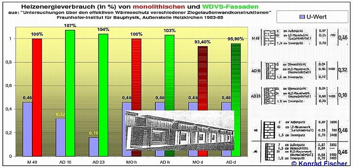
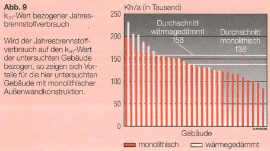

Juni 2002 - und leider/selbstverständlich auch 2012 ff. noch ebenso aktuell, begründet und richtig - aber eben aus allgemein bekannten Gründen total vergeblich, zweck- und sinnlos wie zuvor
Rückfragen: Dipl.-Ing. Konrad Fischer, Architekt BYAK,
Telefon 09 574 - 30 11 / 0170-73 515 57
Telefax 09 574 - 49 60
eMail
Dämmzwang als Anschlag auf Volkswirtschaft und -gesundheit
Die alle paar Jahre wiederkehrende Kampagne für die EnEV verspricht immer noch mehr Energiesparen, Arbeitsplätze und Klimaschutz. Den verordneten Maßnahmen folgen aber nicht nur Bau- und Gesundheitsschäden bis zum Tod durch Dämmstoffbrand, sie sparen auch keine Energie. Die Fakten:
1. Die Bauwerksverpackung kann das Klima nicht schützen. Das Treibhaus Erde ist eine Utopie aus Datenmanipulation und Irrtum.
2. Die Dämmbauweise verschleudert Geld und Energie - trotz Subvention. Das Lichtenfelser Experiment und langjährige Heizkostenabrechnungen und alle vorliegenden Praxistests (Institut für Bauphysik IPB der Fraunhofer-Gesellschaft 1983-1985, GEWOS-Studie 1996, Fehrenberg-Untersuchung, IWH-/ISTA-Untersuchung 2010) beweisen: Dämmstoff dämmt überhaupt nicht, wie berechnet, sondern sorgt für höhere Heizkosten.
3. Der überdichte Bau verschimmelt, auch mit Algen- und Pilzkillern vergiftete Dämmstoffe 'saufen ab', das Aufheizen feuchter Raumluft frißt Energie, der Schallschutz sinkt. Die zementverklebte und oft entzündliche Dämmbauweise ist Pfusch. Das zerstört Fassade, Haus und Mensch, belastet unsere Rohstoffreserven und die Sondermülldeponien.
4. Dem dichten Haus fehlt Frischluft, die Schadstoffkonzentration ist zu hoch. Viel zu viele Milben, Keime, Schimmelpilze und Algen bevölkern inzwischen fast jedes zweite Haus.
5. Jeder zehnte Erstklässler ist hierzulande Asthmatiker, jährlich sterben bei uns 8.000-10.000 Menschen an Asthma. Jeder Dritte leidet an Allergien. Das feuchte Wohnklima der angeblichen Energiesparbauten trägt dazu bei. Die geforderte künstliche Lüftung mit Wärmerückgewinnung ist zu teuer und trotz teurer Wartung oft genug hygienisch riskant.
6. Die Warmmiete kann durch die vorgeschriebene Dämmung nicht gesenkt werden. Der Vermieter weiß das und dämmt nur, um die Baumaßnahme als Modernisierung auf den Mieter umzulegen oder ärmere Mieter gegen zahlungskräftigere auszutauschen. Mietminderung, Abwehr von Kostenumlagen und Kapitalverlust sind neben ungeheueren sozialen Härten die Folge des gesetzlich geförderten Dämmwahns.
7. Der Umweltmediziner Prof. Dr. Martin Schata schreibt der dichten Bauweise jährlich 80 Millionen Mark Folgeschäden zu. Nach einer IfO/RWI-Studie gefährdet die amtliche 'CO2-Minderungsstrategie' unsere Volkswirtschaft. Trotzdem vergeudet unser Staat dafür hohe Steuergeld-Subventionen in dreistelliger Milliardenhöhe mittels raffinierter Verwaltungsmechanismen.
8. Der Energiesparpfusch treibt die Mieter, Vermieter und sonstigen Baubeteiligten vor Gericht.
9. Die Fassadendämmung wird auch von herstellerbeeinflußen Planern und unwirtschaftlich arbeitenden Hausverwaltungen im Eigeninteresse organisiert und von Billig-Kolonnen aufgebracht. Dieser Ersatz der handwerklichen Fassadeninstandsetzung kostet uns qualifizierte Arbeitsplätze und belastet das Sozialsystem.
Daher ist es falsch, das Dämmen und Dichten der Alt- und Neubauten weiter zu verschärfen. Die Systemfehler der EnEV oder am besten gleich der ganze vergebliche Energiesparzwang sind zu beseitigen. Für echten Umweltschutz und ein gesundes Haus bleibt der bewährte Massivbau mit Strahlungsheizung Vorbild.
Weitere Information:
Ratgeber 'Altbau und Wärmeschutz' bei der Deutschen Burgenvereinigung e.V., Marksburg, 56338 Braubach a. Rhein gegen 2,50 EUR in Briefmarken oder kostenlos im Internet www.deutsche-burgen.org.
Text kann hier beendet werden.
Altbau und Denkmalpflege Informationen: http://www.konrad-fischer-info.de
Abdruck frei, 2 Belegexemplare erbeten an o.a. Auskunftsadresse.
V.i.S.d.P.:
Dipl.-Ing. Architekt Konrad Fischer
Hauptstr. 50 - 96272 Hochstadt a. Main - Tel.: 09574 - 3011; Fax: - 4960 eMail
Altbau und Denkmalpflege Informationen: http://www.konrad-fischer-info.de
Text kann hier beendet werden.

mm Modernisierungsmarkt,
Stadthaus-Verlag Berlin
wi Wohnungspolitische Informationen, GdW Bundesverband deutscher Wohnungsunternehmen e.V. Berlin
Bauhandwerk mit BauSanierung und Modernisierungspraxis, Fachzeitschrift für
die gewerkeübergreifende Bauausführung mit Mitteilungen der Arbeitsgemeinschaft Holz, der Deutschen Gesellschaft für
Mauerwerksbau, des Bundesarbeitskreises Trockenbau und des Deutschen Zentrums für Handwerk und Denkmalpflege, Bertelsmann
Gütersloh
ibau Planungsinformationen, i.p. ibau Münster
bau zeitung, Verlag Bauwesen vb, Organ des Zentralverbandes Deutscher Ingenieure
e.V. (ZDI), Fachschaft Bauwesen und der Union Beratender Ingenieure e.V. (U.B.I.-D.)
bauplan/bauorga, Internationale technisch-wirtschaftliche Zeitschrift mit Nachrichten und Mitteilungen für die
Mitglieder des BFIA Berufsverband Freischaffender Ingenieure und Architekten e.V., ADAI Arbeitgeberverband Deutscher Architekten und
Ingenieure e.V., AFB Arbeitgeberverband Freier Berufe im Zentralverband Deutscher Ingenieure e.V. (ZDI), Verlag Heinrich Graefen,
Duisburg
Neue Solidarität, Wochenzeitschrift, Dr. Böttiger-Verlag Wiesbaden
Der Holznagel, Mitteilungsblatt der Interessengemeinschaft Bauernhaus e.V.
B+B Bautenschutz Bausanierung, Zeitschrift für Bauinstandhaltung und Denkmalpflege, Mit den Mitteilungen der
Wissenschaftlich-Technischen Arbeitsgemeinschaft für Bauwerkserhaltung und Denkmalpflege e.V. (WTA), des Deutschen Holz- und
Bautenschutzverbandes e.V. (DHBV), des Bundesarbeitskreises für Altbauerneuerung e.V. (BAKA), der Deutschen Bauchemie e.V., des
Fachverbandes Feuchte- & Altbausanierung e.V., (FAS) sowie des Dahlberg-Institutes f. Diagnostik u. Instandsetzung historischer
Bausubstanz e.V., Verlagsgesellschaft Rudolf Müller Köln
ARCONIS, Wissen zum Planen und Bauen und zum Baumarkt, Fraunhofer IRB Verlag

Wie war das -
Dämmung dämmt nicht wie berechnet?
Nein - der Energiesparaufwand gem. Energieeinsparverordnung (vulgo: Energiesparverordnung/Energiesparordnung) EnEV spart keine Energie und ist folglich kein "Beitrag zum Klimaschutz" (Bundesbauministerium)?
Deutschlands Häuser sollen aber dennoch verpackt, die Bewohner darin im eigenen Mief vergast werden - obwohl das noch nie, wie
Vergleichsstudien (IWH/ista 2010, GEWOS 1969, THERMA-WETTBEWERB des BUNDES, Fraunhofer-Institut 1983-1985, EVAs im eidgenöss. Auftrag durch
Bossert, Fehrenberg, ...) seit den 1980er immer wieder bewiesen - geschweige denn wirtschaftlich - Energie gespart hat. Seit
Inkrafttreten der sog. Energieeinsparverordnung EnEV 2002 läuft die Umsetzung der Dämmstofflüge sogar bußgeldgestützt.
Zwei diesbezüglich aufschlußreiche Grafiken aus den bzw. auf Grundlage der oben aufgeführten Untersuchungen belegen die ausbleibende
Dämmwirkung von Dämmstoffen auf der Fassade (Details und Referenz dazu):


Diese Seiten wollen aufklären, obwohl klar ist, daß wohl mehr als 99 Prozent der Bevölkerung dem Ökowahn, der Klimaschutz-Massen-Halluzination, der Ökopsychose und dem Biofanatismus verfallen sind und wohl auch bald dazu bereit, Ketzer wieder mal zu steinigen, verbrennen oder in Lagern - diesmal mit CO2? - zu vergasen. Dennoch, auch unsere Gesllschaft hat genug Platz für tragische Figuren und Don-Quichotterien, und sei es am Pranger, Balkenkreuz oder auf dem flachen Lande.
Das Wunder der globalen Erwärmung
Das Wunder des gefährlichen CO2s
Das Wunder der versiegenden fossilen Energiequellen
Das Wunder des Naturstroms im Solarzeitalter
Das Wunder der energiesparenden Dämmung mit Leichtbaustoffen.
Das Wunder des Energiesparens mit WDVS / Zusatzdämmung / Fassadendämmung.
So treibt dann der verordnete Dämmzwang die Wohnungsverschimmelung und Investitionsvernichtung - wie immer und ewig - gegen alle begründeten Einwände und Bedenken voran - Zitat aus:
haustechnikdialog.de:
"17.7.2001 Bundesrat ändert EnEV
Der Bundesrat hat am Freitag, 13.07.01 der Energieeinsparverordnung zugestimmt."
Kommentar: Das sicherte der Lobby sogar noch zusätzliche Erträge, in der Sache bleibt die Maßnahme wirkungslos, wie alle Dämmanstrengungen (vgl. Fehrenberg-Untersuchung)
In einer gleichzeitig gefassten Entschließung bittet der Bundesrat die Bundesregierung, bis zum 31. Dezember 2006 die Auswirkungen der Verordnung insbesondere im Hinblick auf die angestrebten Energieeinsparungen und den Klimaschutz zu überprüfen und dem Bundesrat hierzu einen Bericht vorzulegen."
Kommentar: Diese Sache stinkt zum Himmel. Bis zum Jahre 2006 war davon nichts mehr zu hören. Dafür verschärft man die EnEV noch weiter. Man hätte doch auch
damals (2001) nur prüfen müssen, wo die vorher geltende WSVO irgendwas eingespart hat (NIRGENDS!), und wie es zu erklären ist, daß
noch mehr Aufwand im verordneten Dämmen und Heizanlagenvernichtung das Klima schützen soll. Wo doch der Klimaschutzbetrug mit den
"Klimafakten" des staatlichen Instituts für Geowissenschaften, Hannover sozusagen amtlich entlarvt wurde. Da mit der
bisherigen WSVO also nichts war, tut man nun so, als ob es mit der EnEV besser ginge. Irgendjemandem muß es dann doch fast rechtzeitig aufgefallen sein, daß
hier ein Erfolgsbericht überfällig war und folglich kommt es dann letztlich am 31. Januar 2007 zu einem Schreiben des hochmögenden Bundesministeriums für
Wirtschaft und Technologie an die Exzellenzen, Magnifizenzen, Herrlich- und Dämlichkeiten des wunderbaren Bundesrats:
Bericht der Bundesregierung zu der Entschließung des Bundesrates zur Verordnung über energiesparenden Wärmeschutz und energiesparende Anlagentechnik bei Gebäuden (Energieeinsparverordnung - EnEV).
Darin heißt es dann abschließend so schön im allerbesten Orwellschen Neusprech:
"Auswirkungen der EnEV auf Energieeinsparung und Klimaschutz / CO2-Reduktion:
Mit ihren umfassenden energiesparenden Anforderungen an neue und bestehende Gebäude leistet die EnEV im Gebäudebereich einen wesentlichen Beitrag zur
Energieeinsparung und damit auch zur CO2-Reduktion. Quantitative Aussagen über die Auswirkungen der EnEV-Anforderungen sind allerdings schwierig und
lediglich als grobe Schätzungen möglich.
Im Neubaubereich lassen sich die aufgrund der Anforderungen der EnEV zu erwartenden Einspareffekte in Referenz zum Anforderungsniveau der jeweils vorher
geltenden Verordnungsfassung recht gut einschätzen. Das energetisch einzuhaltende Niveau neuer Gebäude nach EnEV liegt um durchschnittlich 30 % unter dem
geforderten Niveau der Vorgängerregelung. Im Gebäudebestand sind dagegen wegen der komplexen Bestandslage und der häufig vielfältigen Motive für eine
energetische Sanierung allein auf die EnEV bezogene Energie- und CO2- Einspareffekte schwieriger zu ermitteln. Die verfügbaren Untersuchungsergebnisse
differieren in ihren Einschätzungen daher erheblich. Ihnen ist jedoch gemein, dass sie von einem signifikanten Einspareffekt durch die EnEV ausgehen."
Aha. Nix Genaues weiß man halt nicht und das muß dem Bundesrat genügen, um den Bürger weiter dem Klimastuß zum Fraß auszuliefern. Lobbykratur vom Feinsten
eben. Nichts anderes haben wir Wähler von unserer Politik, der wir unsere Stimmviehstimme gegeben haben, erwartet. Mäh, mäh! Und unsere Politiker, was haben
die darauf gemacht? Nichts. Sie ziehen wie immer die Hände aus unseren Taschen - aber nur zur Abstimmung weiterer enteignungsgleicher Abzocken - und werden
am Ende bestenfalls mit heuchlerischem Augenaufschlag sagen, sie hätten halt wieder mal den ausgewiesenen Experten vertraut und wüßten sonst von nichts. Das
hatten wir doch schon mal, oder?
Hier, was ein erfahrener Kollege zur EnEV meint: Interview mit Dipl.-Ing. Arch. Tomas Schreiner: auf www.dimagb.de
und hier, was sonst noch so läuft:
Rolf Köneke - sick-building-center
Buschrosenweg 31
22 177 Hamburg
als Kontaktadresse für den Arbeitskreis Gesundes Haus AGH
An den
Petitionsauschuß des Deutschen Bundestages
11011 Berlin
AGH-Petition zur Energieeinsparungsverordnung EnEV
Sehr geehrte Damen und Herren des Petitionsausschusses,
es wird hiermit Beschwerde gegen die an der EnEV beteiligten Ministerien eingelegt aus folgenden Gründen:
1. Gesetzwidriges Verhalten,
2. Unzumutbarkeit der vorgeschlagenen Rechenmethoden,
3. Mißbrauch technisch-wissenschaftlicher Verfahren,
4. Negative Auswirkungen der EnEV.
Der Referentenentwurf vom 29. 11. 2000 liegt vor. Auf Grund des Energieeinsparungsgesetzes vom 22. Juli 1976 soll dieser Referentenentwurf von der Bundesregierung verordnet werden. Hierzu wird festgestellt:
Zu 1) Gesetzwidriges Verhalten
Im Energieeinsparungsgesetz, der Ermächtigungsgrundlage zum Erlaß der Wärmeschutzverordnungen, wird die Wirtschaftlichkeit im § 5 ”Gemeinsame Voraussetzungen für Rechtsverordnungen” gefordert. Der § 5(1) lautet verkürzt:
(1) "Die in den Rechtsverordnungen ... aufgestellten Anforderungen müssen ... wirtschaftlich vertretbar sein. Anforderungen gelten als wirtschaftlich vertretbar, wenn generell die erforderlichen Aufwendungen innerhalb der üblichen Nutzungsdauer durch die eintretenden Einsparungen erwirtschaftet werden können."
Diese Aussage ist eindeutig. Unwirtschaftliche Energiesparmaßnahmen sind damit gesetzwidrig. Die technische Umsetzung der Anforderungen der EnEV erfordert einen Aufwand, der durch die damit erzielten Einsparungen wirtschaftlich nicht gedeckt werden kann. Es gibt kein Beispiel, bei dem die Wirtschaftlichkeit nachgewiesen werden konnte. Eine Verordnung, deren Anforderungen grundsätzlich zu unwirtschaftlichen Energiesparmaßnahmen führen, ist deshalb null und nichtig.
Auch die Wohnungswirtschaft leidet unter dem Diktat der überzogenen Anforderungen, die Wohnungsbaugesellschaften werden in ein finanzielles Fiasko gestürzt. Die Umlegung der investiven Maßnahmen auf den Mieter wird für sozialen Zündstoff sorgen. Die Differenz der Heizkostenrechnungen können die Differenz zur steigenden Miete nicht kompensieren.
Beispielhaft sei eine Notiz aus der FAZ vom 05. 09. 2000 erwähnt:
Drei Wohnhäuser mit jeweils 6 Dreizimmer-Wohnungen a 71 m² Wohnfläche werden von der ”Gesellschaft für Wohnungsbau und Hausverwaltung im Stadtgebiet Aschaffenburg” saniert. Als ”energiesparende Maßnahmen” wurden durchgeführt:
- Wärmedämmverbundsystem mit 8 cm Mineralfaser und Silikonputz,
- wärmedämmende Kunststoffenster mit Wärmedämmverglasung,
- Decke zum Dach mit 12 cm Polystyrol,
- Einbau eines Brennwertkessels
- Regelung der Raumtemperaturen.
Im Text heißt es dann:
”Der Energiebedarf zum Heizen der Häuser wird nach den Erwartungen der Baugesellschaft um rund 35 Prozent sinken. Pro Jahr und Wohnung würde das eine Einsparung von etwa 180 Mark ergeben”.
35 % suggeriert viel, 180 DM pro Jahr bedeutet aber ein ”Nichts”. Bei 6 Wohnungen pro Haus wird damit eine Einsparung von 1080 DM/a erzielt. Wird für die Wirtschaftlichkeitsberechnung ein Mehrkostennutzenverhältnis von 15 (sehr gewagt) angenommen, dann beträgt das Investitionskostenlimit pro Haus:
15 x 1080 = 16.200 DM.
(Das Mehrkostennutzenverhältnis ist das Maß
für die Wirtschaftlichkeit; siehe: Ehm, H.: Maßnahmen zum baulichen Wärmeschutz
und zur Energieeinsparung in bestehenden Gebäuden;
Kosten-Nutzen-Betrachtung. wksb 1979, H. 8, S. 1 und Werner, H.; Gertis, K.: Zur Wahl von
Kalkulationsmethoden bei der Ermittlung der Wirtschaftlichkeit von
Energiesparmaßnahmen. Baumaschine + Bautechnik 1979, H.2, S. 65).
Jeder Architekt oder Bauleiter weiß, daß die Realisierung der oben genannten fünf “energiesparenden” Maßnahmen für 16.200 DM pro Haus eine Utopie ist – wie eben alles im jetzt geforderten Gebäudewärmeschutz.
Die beteiligten Ministerien verstoßen somit eklatant gegen das Wirtschaftlichkeitsgebot des Energieeinsparungsgesetzes – sie handeln gesetzwidrig. Das soziale Gewissen soll jetzt nicht Gegenstand der Petition sein.
Gegenstand einer Gegenäußerung muß die nachvollziehbare und mit realistischen Daten versehende Wirtschaftlichkeitsberechnung sein; eine solche ist bis jetzt noch nicht vorgelegt worden. Die der Bundesregierung vorliegenden Gutachten zur Wirtschaftlichkeit sind, wenn darauf zurückgegriffen wird, vollständig zu präsentieren, die Gutachter zu benennen.
Zu 2) Unzumutbarkeit der vorgeschlagenen Rechenmethoden
Es heißt in der Begründung zur EnEV: “Die Energieeinsparverordnung soll nicht mit umfänglichen technischen Regelungen befrachtet werden”. Es wird statt dessen auf umfangreiche Normen verwiesen. Diese sind:
1. DIN V 4108-6 mit 46 Seiten
2. Entwurf DIN 4701-10 mit 30 Seiten
3. DIN EN 832 mit 30 Seiten
Werden die ebenfalls zu beachtenden Entwürfe zur DIN 4108-2 mit 21 Seiten und zur DIN 4108-3 mit 43 Seiten hinzugezählt, dann ergeben sich allein für diesen schmalen bauphysikalischen Sektor insgesamt 170 Seiten.
Diese Informationsfülle ist für ein ordnungsgemäßes Planen und Entwerfen unzumutbar. Werden die inhaltlichen und methodischen Fehler noch mit einbezogen, dann mutiert diese Informationsschwemme zum Informationsmüll. Die Anwendung verbietet sich somit von selbst.
Zu 3) Mißbrauch technisch-wissenschaftlicher Verfahren
Es heißt in der Begründung zur EnEV:
“Durch Verweis auf die EN 832 ist nunmehr die Möglichkeit gegeben, auf die Darstellung von Nachweisregeln in der Verordnung weitgehend zu verzichten”.
Die DIN EN 832 wird damit beim Nachweis zum zentralen Mittelpunkt der EnEV. Dieses Nachweisverfahren wird an einem Beispiel im Anhang L der DIN EN 832 erläutert.
Die Tabelle L9 listet die Heizwärmebedarfswerte eines ca. 90 m² großen Hauses auf und enthält auch das Ergebnis für die Heizperiode:
30 000 MJ ± 13 000 MJ oder in kWh: 8333 kWh ± 3611 kWh
Mit einer solchen Abweichung werden alle ernst zu nehmenden Berechnungen in den Ingenieurwissenschaften verhöhnt. Eine Abweichung von ± 43,3 % ist ein Skandal. Immerhin liegen mögliche Ergebnisse dann zwischen 4722 kWh und 11944 kWh bzw. zwischen 52,8 kWh/m²a und 133,5 kWh/m²a und das ist immerhin das 2,53 fache. Eine derartige Streuung entbehrt jeder soliden wissenschaftlichen Arbeit.
Ein solches Ergebnis kann nicht ernst genommen werden und beweist die Unzuverlässigkeit der Rechenmethoden. Mit dieser Streuung werden die methodischen und inhaltlichen Fehler der DIN-Normen inkognito eingestanden. Die gesamte DIN-EN 832 muß deshalb aus dem Verkehr gezogen werden.
Weiter heißt es in der Begründung zur EnEV:
“Ziel sei die Erhöhung der Transparenz für Bauherren und Nutzer durch aussagekräftige Energieausweise”.
Bei solchen haarsträubenden Ergebnissen mit Streuungen von ± 43,3 % kann nicht von aussagekräftigen Dokumenten gesprochen werden.
Damit aber werden auch die in der EnEV §13 geforderten “Ausweise über Energie- und Wärmebedarf, Energieverbrauchskennwerte” hinfällig. Die Juristen finden jedenfalls hier ein reichhaltiges Betätigungsfeld vor, wenn der Kunde, wenn der Verbraucher, wie ihm ja immer erzählt wird, die dort angegebenen “Bedarfswerte” einmal juristisch einfordern, einmal einklagen sollte. Immerhin muß vom Verordnungsgeber die Frage klar beantwortet werden, ob ein Recht auf die Einhaltung der in den Energieausweisen falsch berechneten Werte besteht.
Zu 4) Auswirkungen der EnEV
Im Vollzug der EnEV, aber auch der bisherigen Wärmeschutzverordnungen werden für die Außenhülle ausschließlich Dämm-Maßnahnen vorgesehen, die sich hauptsächlich in Wärmedämmverbundsystemen niederschlagen. Die Nachteile sind gewaltig, sie dürfen nicht bagatellisiert werden.
Gesundheitlicher Aspekt
Seit Jahren werden unsere Wohnhäuser gemäß WSchVO mit “Verpackungs-Material” eingepackt. Das führt zu einem hermetischen Verschluß. In etwa Einhunderttausend Groß-Wohnhäusern gibt es 1 Million Wohnungen mit Schimmel. Die Folge ist:
Vernichtung des Wohnklimas,
Übersättigung mit Schimmel,
schwere Allergien,
asthmatische Erkrankungen.
Energierelevanter Aspekt
Der Einbau neuer Fenster und die Verkleidung mit Dämm-Material sollte zu einer wesentlichen Energieeinsparung führen. Dies hat sich nicht bewahrheitet (man meint deshalb, nun noch mehr dämmen zu müssen, um endlich etwas zu erreichen). Nur heiztechnische Verbesserungen können Heizkosten senken.
Bauphysikalischer Aspekt
Das seit Jahrhunderten wohnbiologisch vorbildliche Massiv-Haus mit einer Wohnqualität, die “Niedrigenergiehäuser” nie erreichen können, darf nicht hermetisch abgedichtet werden. Dagegen wird jedoch verstoßen:
Von außen durch das sorptionsdichte und diffusionsbehindernde Wärmedämmverbundsystem, von innen durch die mit Kunststoffdispersion gestrichene Rauhfasertapete und die dichten Fenster. Die Folge ist:
Schimmel verursachende hohe Feuchte im Innenraum,
Feuchteansammlung in der Außenwand
– die Dämmung wird unwirksam.
Lüftungsrelevanter Aspekt
In einem dichten Raum, der allein schon durch das Bewohnen eine hohe Feuchte aufweist, wird es niemals gesundes Leben geben. Alles wird feucht und schimmelig. Die eingebauten Wohngifte erhöhen die Krankheitshäufigkeit.
Umweltrelevanter Aspekt
Bei den WDV-Systemen kommt zu 90% EPS zum Einsatz; es enthält hochbrennbares Styrol. Im Brandfall werden hochgiftige Gase freigesetzt (Flughafen Düsseldorf). WDV-Systeme lassen sich nicht recyceln, es sitzt fest verbunden am Wohnhaus.
Fachleute – auch das Umweltamt Hamburg – sagen:
“Dieses Material dürfte gar nicht erst produziert werden”.
Trotzdem wird es überall eingesetzt – auch im Innenbereich. Gesundheitsverstöße sind deshalb an der Tagesordnung.
Volkswirtschaftlicher Aspekt
Das Anbringen eines WDV-Systems kostet 150,-DM/m². Auf diese Weise wurden bisher 40 Milliarden DM ausgegeben – ohne eine wesentliche Energieeinsparung zu erzielen, die dann auch zu einer merkbaren CO2-Minderung führen würde.
Allerdings wurde damit erreicht, daß bereits 400 000 Bürger erkrankt sind. Das Entfernen der WDV-Verkleidung kostet noch einmal 20 Milliarden DM. Der Wertverlust der Häuser muß auch beachtet werden.
Quintessenz
Die angeführten Fakten müssen beachtet werden, soll das Staatswesen durch solche unverständlichen und deshalb wohl auch zwangsläufig administrativen Aktivitäten nicht weiterhin in Mißkredit geraten und Schaden erleiden. Die Vergangenheit zeigt genügend Beispiele unverantwortlichen Handelns.
Der Arbeitskreis stellt fest:
1. Werden die Unzulänglichkeiten der “Energieeinsparkampagnen” offengelegt, wird mit Bußgeldbescheiden ab 250 000 DM operiert.
2. Werden Ministerien auf die Widersprüche und Gefahren aufmerksam gemacht, so werden diese Warnungen ignoriert – sie interessieren sich nicht dafür.
3. Werden einzeln Gesundheits-, Jugend-, Sozial- und andere Ministerien mit klaren Fragen angeschrieben, so setzt das Geschiebe der Zuständigkeiten ein. So werden klare Antworten vermieden.
4. Auf Fragen im Zusammenhang mit der Gesundheit der Bürger an den “Umwelt-Sachverständigen-Rat”, der die Bundesregierung berät, wird überhaupt nicht geantwortet. Die Verdrängung von unangenehm empfundenen Fragen scheint Schule zu machen – siehe BSE-Krise.
5. Auch industrieabhängige “Wissenschaftler”, die die Bundesregierung richtig beraten sollten, tun dies nicht. Die Interessen der Industrie haben Vorrang vor den Interessen der Verbraucher. Auch beim Gebäudewärmeschutz muß der Vebraucherschutz eingefordert werden.
6. Es geht nicht an, daß in dieser bisherigen Form weitergearbeitet wird. Es geht nicht an, daß die Gebäudesubstanz eingepackt werden soll. Es geht nicht an, daß unsere Häuser zerstört werden. Es geht nicht an, daß die Gesundheit der Bürger gefährdet wird. Es geht nicht an, daß unsere schon kranken Kinder im Umwelt-Dämm-Müll ersticken.
7. Deshalb ist eine öffentliche Diskussion unausweichlich. Die Verantwortung gegenüber dem Bürger gebietet dies.
Wir bitten im Interesse der betroffenen Bevölkerung um angemessene Sachbehandlung.
Im März 2001
Arbeitskreis Gesundes Haus AGH:
Dr. phil. Helmut Böttiger, Wiesbaden; Dipl.-Ing. Alfred Eisenschink, Murnau; Dipl.-Ing. Architekt Konrad Fischer, Hochstadt a. Main; Dr. rer. nat. habil.
Michael Gagelmann, Wiss. Beirat der Interdisziplinären Gesellschaft für Umweltmedizin IGUMED e.V., Schriesheim; Prof. Dr. Gerhard Gerlich (* 6. April 1942 in
Prag; † 8. November 2014), Institut für Mathematische Physik der TU Braunschweig, Braunschweig; Rolf Köneke (4.4.1922 - 28.9.2002), Bausachverständiger,
Hamburg; Dipl.-Ing. Architekt Kai Kühnel, Stadtrat, Dachau; Prof. Dr.-Ing. habil. Claus Meier (1932-2015), wiss. Direktor und Leiter Hochbauamt Stadt
Nürnberg a.D., Nürnberg; Dipl.-Met. Dr. phil. Wolfgang Thüne, ZDF-Meteorologe und Ministerialrat a. D., Oppenheim
i. A.
Rolf Köneke, Bausachverständiger
Wie üblich versucht nun der Petitionsausschuß unter Berufung auf den in dieser Angelegenheit seit über 20 Jahren bewiesenen Sachverstand seines Bauministeriums das Bürgeranliegen abzuschmettern. Zitat aus dem (Textbaustein-)Schreiben vom 9.5.01:
"Nach Prüfung aller Gesichtspunkte kommt der Ausschussdienst zu dem Ergebnis, dass Ihre Petition erfolglos bleiben wird. Diese Auffassung stützt sich insbesondere auf die detaillierten Ausführungen des Bundesministeriums für Verkehr, Bau- und Wohnungswesen vom 17.04.2001."
Mit wie wenig so ein "Ausschußdienst" zufrieden zu stellen ist - in Anbetracht der gegebenen und schlüssig dargelegten Brisanz der Petition für das Bürgerwohl - ist wohl am besten in der Rubrik "MAKABER" einzuordnen. Wir wollen Ihnen nicht vorenthalten, zu welch gestanzten Leer- bzw. Beschwörungsformeln ein MD Prof. Dr. Abteilungsleiter - wohl unter Zuhilfenahme eines TOP-Beamten in seinem Hause (hoffentlich, wobei die Vorlage auch "von draußen" denkbar sein könnte) - sich herablassen kann:
(wortgetreue Abschrift, grammatikalische Fehler im Original)
"BUNDESMINISTERIUM FÜR VERKEHR,
BAU- UND WOHNUNGSWESEN
MD Prof. Dr. Michael Krautzberger
Abteilungsleiter Bauwesen und Städtebau
17. April 2001 / Gesch.-Z.: BS 34 - R 14
Deutscher Bundestag
Petitionsausschuß
Platz der Republik 1
11011 Berlin
Eingabe des Herrn Rolf Köneke, 22177 Hamburg, Buschrosenweg 31,
vom 10. Februar 2001
Ihr Schreiben vom 6.3.2001, Pet 1-14-12-232-031592, hier eingegangen
am 8. März 2001
Der nachhaltige Umgang mit Umweltressourcen, insbesondere mit fossilen Energieträgern, ist ein besonderes Anliegen der Bundesregierung. Sie ist gewillt, den Energieverbrauch und die CO2 Emissionen im Gebäudebereich deutlich zu reduzieren und hat dazu im Rahmen des nationalen Klimaschutzprogramms entsprechende Beschlüsse gefasst. Da der Heizenergieverbrauch in der Bundesrepublik Deutschland ca. ein Drittel des Gesamtenergieverbrauches ausmacht, ist es notwendig, gerade im Gebäudebereich weitere Maßnahmen zur Verbesserung der Energieeffizienz zu ergreifen. Damit wird nicht nur die Umwelt entlastet, sondern auch die Betriebskosten der Bürger gesenkt.
Die wärmeschutztechnische Optimierung von Gebäuden einschließlich der Verminderung der Transmissionswärmeverluste durch Verbesserung der Dämmeigenschaften der Gebäudehülle ist eine wichtige Maßnahme der Energieeinsparung. Nicht nur theoretisch errechnete, sondern auch in der Praxis gemessene Werte zeigen, dass eine zusätzliche Dämmung den Energieverbrauch von Gebäuden deutlich verringert. Dies zeigt auch die statistische Auswertung der Heizkostenerfassung. Über entsprechende wissenschaftlich begleitet Felsuntersuchungen können Sie sich z. B. beim Institut für Wohnen und Umwelt Darmstadt, beim Fraunhofer-Institut für Bauphysik in Stuttgart oder beim Institut für Erhaltung und Modernisierung von Bauwerken in Berlin informieren.
Feuchteschäden und die damit verbundene Schimmelpilzbildung sind nicht das Resultat einer ordnungsgemäßen Wärmedämmung. Ursache für Schimmelbildung ist eine hohe relative Luftfeuchtigkeit in Kombination mit niedrigen Raumluft- bzw. Oberflächentemperaturen der Bauteile. Untersuchungen an Bauwerken zeigen, dass z. B. die Dämmung der Außenwände bei älteren Gebäuden die innere Oberflächentemperatur der Außenwände im Durchschnitt um 3 bis 4°C erhöht. Bei Vermeidung von Wärmebrücken verringert die zusätzliche Dämmung die Gefahr von Tauwasserniederschlag.
Darüber hinaus ist eine sachgerechte Beheizung und Belüftung notwendig. Eine gezielte Lüftung ist im Übrigen nur durch den Nutzer ider durch eine Lüftungsanlage jedoch nicht über „atmende Bauteile“ möglich. Auch diese Tatsache ist in der Bauphysik durch Theorie und Praxis zweifelsfrei belegt worden.
Zu der Kritik, dass durch die zusätzliche Dämmung von Gebäuden hochbrennbare Stoffe im Gebäude eingebaut werden, verweise ich auf die Landesbauordnungen, in denen die Verwendung von Bauprodukten imn Bauwesen geregelt wird. Danach müssen Dämmstoffe wie alle gebäuchlichen Baustoffe mindestens schwer- oder normalentflammbar sowie umweltverträglich sein. Nachfragen können Sie an das zuständige Deutsche Institut für Bautechnik, Berlin, richten.
Moderne zusätzlich gedämmte Konstruktionen können ebenso wie monolithische Massivbauweisen bei richtiger Auslegung und Optimierung zur Energieeinsparung beitragen. Die ist und bleibt ein wichtiges volkswirtschaftliches Erfordernis.
Mit freundlichen Grüßen
Im Auftrag"
Das läßt den AGH natürlich nicht ruhen, und so wird mit folgender Stellungnahme pariert:
Prof. Dr.-Ing. habil. Claus Meier
Architekt SRL, BYAK
Neuendettelsauer Straße 39
90449 Nürnberg
An den
Petitionsauschuß des Deutschen Bundestages
11011 Berlin
AGH-Petition zur EnEV vom März 2001
Pet 1-14-12-232-031592
hier: Brief des Petitionsausschusses vom 09.05.01 / Stellungnahme des BMBau vom 17.04.01
Sehr geehrte Damen und Herren,
zu den og Schreiben ist folgendes zu erwidern:
Wenn die Stellungnahme des Bundesministeriums für Verkehr, Bau und Wohnungswesen bei der Prüfung der Petition mit einbezogen wird, so ist dies üblich, doch das Anliegen des ”Arbeitskreises Gesundes Haus” ist dabei keineswegs sachgerecht gewürdigt worden. Wenn der ”Ausschußdienst” zu dem Ergebnis kommt, daß nach ”Prüfung aller Argumente” die Petition der AGH erfolglos bleiben wird, so ist es in einem demokratischen Staat durchaus legitim, die ”Ausschußmitglieder” zu benennen, die zu dieser Schlußfolgerung kamen. Der Ausschußdienst sollte darauf achten, nicht als ”Ausschlußdienst” zu fungieren. Für diese Art von Arbeit dürften sich viele Abgeordnete interessieren.
Die Erfahrung lehrt, daß kritische Äußerungen nicht beachtet werden, weil sie nicht zu widerlegen sind. Dies aber ist nach Karl Raimund Popper notwendig, denn nach seinen Aussagen kann nicht das Wahre bewiesen, sondern nur das Falsche widerlegt werden. Es muß also widerlegt werden; nur widersprechen ist unnötig und dient nicht der Sache. Insofern ist es dann schon recht aufschlußreich, daß auf die Argumente der AGH überhaupt nicht eingegangen wird; statt dessen werden die üblichen Floskeln zum Thema wiederholt.
Die Erwiderung besteht deshalb aus zwei Teilen:
A) Wie ist auf die Argumente der AGH eingegangen worden?
B) Wie ist die Stellungnahme des Ministeriums zu werten?
Zu A): Punkt 1) der AGH: Gesetzwidriges Verhalten.
Die Gesetzwidrigkeit besteht in der grundsätzlichen Unwirtschaftlichkeit des geforderten Anforderungsniveaus. Ein Beispiel ist in der Petition genannt. Darauf wird nicht eingegangen. Da nicht widerlegt wird, gilt die Aussage der AGH.
Punkt 2) der AGH: Unzumutbarkeit der vorgeschlagenen Rechenmethoden.
Auch diese Feststellung wird ignoriert. Wer keine nachvollziehbaren Gegenargumente vorbringen kann, der akzeptiert somit die in der Petition enthaltenen Äußerungen.
Punkt 3) der AGH: Mißbrauch technisch-wissenschaftlicher Verfahren.
Es geht immerhin um die von der Bundesregierung beabsichtigte Einführung der EnEV. Die ”Berechnungen” stützen sich auf die DIN EN 832. Dieses ”Rechenwerk” wird von den Schöpfern selbst in Methode und Inhalt als unzureichend und widersprüchlich angesehen, sonst würden die Rechenergebnisse nicht mit einer Streuung von ± 43,3% belegt werden. Jeder verantwortungsvolle Fachmann lehnt einen solchen ”Rechenunsinn” ab. Das Ministerium erwähnt mit keiner Silbe diesen ingenieursmäßigen Skandal. Auch die Konsequenzen bezüglich der Energie- und Wärmebedarfsausweise werden verdrängt.
Punkt 4) der AGH: Auswirkungen der EnEV.
Auf die sechs Aspekte der Auswirkungen ist nicht eingegangen worden.
Quintessenz der AGH: Feststellungen des Arbeitskreises.
Die Feststellungen bewahrheiten sich in erstaunlicher Weise durch die Sachbehandlung dieser Petition selbst.
Fazit: Es ist der falsche Weg, in doktrinärer und absolutistischer Art zu reagieren und die ernst gemeinten Hinweise der AGH zu übergehen. Mit solchem Verhalten entfernen sich Politik und Administration von der Realität; sie haben keinen Bezug mehr zum Bürger. Sich dann über Politikverdrossenheit zu beklagen, ist Heuchelei. Auf meinen Brief an den Herrn Bundeskanzler vom 03.01.01 wird in diesem Zusammenhang hingewiesen.
Zu B):
Aus dem Brief des Bundesministerium für Verkehr, Bau- und Wohnungswesen werden wesentliche Passagen aus der Sicht des Kunden und Verbrauchers kommentiert:
1. ”Sie (die Bundesregierung) ist gewillt, den Energieverbrauch und die CO2-Emissionen ... deutlich zu reduzieren”.
Was heißt hier ”ist gewillt”?. Entweder sie macht es oder sie macht es nicht. Diese Floskel ist das verborgene Eingeständnis, mit den gefaßten Beschlüssen kaum etwas erreichen zu können – dies ist nämlich nachweisbar unwiderlegbare Realität. Sie hat es mit dieser Formulierung also weder versprochen, noch steht sie dafür gerade.
2. ”Der Heizenergieverbrauch in der BRD macht ca. ein Drittel des Gesamtenergieverbrauches aus”.
Dies ist eine der großen Unwahrheiten, die überall verbreitet werden. Das Drittel bezieht sich auf den Energieverbrauch der fünf ”Endenergieverbrauchssektoren” und dieser Wert wird zum ”Gesamtenergieverbrauch” umgemünzt. Der Gesamtenergieverbrauch beläuft sich jedoch bei Berücksichtigung der Umwandlungsenergie und der Umwandlungsverluste auf etwa das Zweieinhalbfache, so daß für den Heizenergieverbrauch ca. 10% herauskommt. Zu entnehmen dem ”Vierten Immissionsschutzbericht der Bundesregierung vom 28. 07. 88 (Drucksache 11/2714 – Deutscher Bundestag) S. 14 und 15.
3. ”Es ist notwendig, weitere Maßnahmen zur Verbesserung der Effizienz zu ergreifen”.
Effizienz bedeutet auch und vor allem Wirtschaftlichkeit. Diese zu gewährleisten ist die eindeutige Auflage des Energieeinsparungsgesetzes, das im § 5 die Wirtschaftlichkeit dieser “Maßnahmen” fordert. Die aber ist nicht gegeben. Gegenteiliges muß nachgewiesen werden, kann jedoch wegen der Hyperbeltragik grundsätzlich nicht nachgewiesen werden. Insofern wird auf diesem Feld nur palavert und gekalauert.
4. ”Damit wird nicht nur die Umwelt entlastet, sondern auch die Betriebskosten der Bürger gesenkt”.
Mit dem Anforderungsniveau eines Niedrigenergiehauses gegenüber einem Normalhaus (Referenzhaus) wird kaum eine nennenswerte Einsparung erzielt, also auch die Umwelt nicht nennenswert entlastet. Deshalb wird dann immer nur von prozentualen Einsparungen gesprochen. Wegen der sehr geringen absoluten Energieeinsparungen ist alles unwirtschaftlich. Aus diesem Grunde wird hier auch nur von den ”gesenkten Betriebskosten” gesprochen. Einmal wird über die Höhe dieser Betriebskosten nichts ausgesagt, zum anderen müssen den ersparten Betriebskosten die hierfür erforderlichen Investitionskosten gegenüber gestellt werden – und da sieht es mit der Wirtschaftlichkeit sehr schlecht aus [siehe Beispiel in 1) der Petition vom März 2001]. Aber auch andere Veröffentlichungen zeigen die Unwirtschaftlichkeit der Niedrigenergiebauweise. Für Energiekosteneinsparungen von 1,30 DM/m²a müssen 50 bis 150 DM/m² an Mehrkosten aufgebracht werden. Auch hier ist die Wirtschaftlichkeit nicht gegeben. [Erhorn, H.: Nullheizenergiehäuser marktreif – auch marktgängig? Bauphysik 1998, H. 3, S. 69].
5. ”Verminderung der Transmissionswärmeverluste durch Verbesserung der Dämmeigenschaften ... ist eine wichtige Maßnahme ...”
Die Verbesserung der Dämmeigenschaften (k-Wert-Verbesserung) hat eine Effizienzgrenze, die durch die EnEV nicht eingehalten wird. Der Aufwand wird zu groß und entspricht damit nicht mehr dem Wirtschaftlichkeitsgebot des Energieeinsparungsgesetzes. Man handelt gegen das EnEG. [siehe auch 4. und 6.]. Außerdem ist zu beachten: Der k-Wert gilt nur für den Beharrungszustand, dies steht in jedem Bauphysik-Lehrbuch. Das bedeutet aber: Keine Sonne, keine Speicherfähigkeit, konstante Wärmestromdichte. Alle drei Bedingungen treffen in Realität wegen der ständig vorhandenen Solarstrahlung nicht zu – besonders beim Altbau. Hier glauben Politiker und Administration kritiklos der Dämmstoffindustrie – und die will nur Dämmstoff verkaufen. Ebenfalls Bestandteil eines umfassenden Wärmeschutzes ist jedoch auch die Speicherung mit unterschiedlichen Wärmestromdichten. [Forschungsbericht des Institutes für Bauphysik EB-8/1985]. Insofern führt die k-Wert-Minimierung in die Sackgasse. Aber Speicherung der Außenwand wird konsequent ignoriert.
6. ”Statistische Auswertungen von in der Praxis gemessenen Heizkostenerfassungen, wie z. B. vom Institut für Wohnen und Umwelt Darmstadt, zeigen, daß eine zusätzliche Dämmung den Energieverbrauch ... deutlich verringert”.
Die Frage lautet hier nur, um welchen Betrag wird verringert? Meist werden nur prozentuale Angaben gemacht und die sind allein irreführend, weil die absoluten Werte unbedeutend sind. Die Auswertungen der vom IWU-Darmstadt betreuten Niedrigenergiehaus-Programme in Schleswig-Holstein und Hessen zeigen die Unwirtschaftlichkeit der durchgeführten Maßnahmen und damit verstoßen sie gegen das EnEG. Zusätzliche Investitionskosten für Niedrigenergiehäuser i. M. von 46,5 DM/m² stehen Einsparungen i. M. von 1,35 DM/m²a gegenüber, so daß diese Maßnahmen sogar divergent sind; sie amortisieren sich also nie. Die finanzmathematische Analyse der von den Niedrigenergiehauserbauern selbst vorgelegten Daten beweisen also schon den Gesetzesverstoß gegen das EnEG. Es ist ein Hohn, wenn dann sogar vom ”EnergieEffizientenBauen” gesprochen wird; der Kunde wird damit maßlos getäuscht.
7. ”Über entsprechende wissenschaftlich begleitete Feldversuche kann man sich u.a. auch beim Fraunhofer-Institut für Bauphysik informieren”.
Von der Qualität von Feldversuchen des IBP-Stuttgart kann sich sogar jeder Laie eine Vorstellung machen, wenn folgendes Forschungsergebnis erwähnt wird [IBP-Bericht REB-4/1996]: “Infolge der Absorption von Solarenergie ist eine Nordwand ohne Solareinstrahlung energetisch günstiger einzustufen als eine Südwand mit Solareinstrahlung”. Etwas Widersinnigeres gibt es nicht. Dies zeigt recht eindrucksvoll den desolaten Zustand des Fraunhofer-Institutes unter Prof. Gertis in Fragen der Wissenschaftsmethodik.
8. ”Ursache für Schimmelpilzbildung ist eine hohe relative Luftfeuchtigkeit in Kombination mit niedrigen Raumluft- bzw. Oberflächentemperaturen der Bauteile”.
Allein entscheidend für die Schimmelpilzbildung ist die zu hohe relative Luftfeuchte. Die aber entsteht durch die geforderten dichten Fenster, wodurch sich automatisch ein feuchtes Raumklima einstellt. Die ”niedrigen Raumluft- bzw. Oberflächentemperaturen der Bauteile” spielen nur eine untergeordnete Rolle, denn bei 20°C Lufttemperatur und normaler relativer Feuchte von 50% (Randbedingung in der DIN 4108, Teil 5) kann die Raumluft bis auf 9,3°C abgekühlt werden, ehe sie kondensiert (DIN 4108, Teil 5, Tabelle 1). Es ist also eine irreführende Aussage, hier von einer Kombination von Feuchte und Raumluft- bzw. Oberflächentemperatur zu sprechen. Niedrige Temperaturen, auch bei Wärmebrücken, sind bei normalen Raumluftfeuchten völlig ungefährlich.
9. ”Eine gezielte Lüftung ist ... nicht über ”atmende Wände” möglich”.
Mit ”atmenden Wänden” ist die Sorptionsfähigkeit der Außenkonstruktion gemeint, die bei Schichtkonstruktionen wie Wärmedämmverbundsystemen infolge der Folien, Sperren und dichten Schichten nicht mehr gegeben ist. Der kapillare Feuchtetransport, die Entfeuchtung (nach außen) ist damit unterbrochen. Sorptionfähigkeit einer Außenkonstruktion ist sehr wichtig, wird aber in der DIN 4108 nicht behandelt. Beim ”Atmen” des Menschen wird neben der Sauerstoffaufnahme und CO2-Abgabe zusätzlich Feuchte transportiert, die ausgeatmete Luft ist hoch feuchtebeladen. Insofern ist das “Gleichnis vom Atmen” nicht ganz von der Hand zu weisen.
10. ”..., daß durch die zusätzliche Dämmung ... hochbrennbare Stoffe ... eingebaut werden, verweise ich auf die Landesbauordnungen”.
Mit diesem Hinweis wird die Brandgefährlichkeit von Dämmungen nicht in Abrede gestellt, es wird lediglich die Verantwortung verlagert. Genügen nicht die Toten von Kaprun? – das Feuer konnte sich dort durch die Styropor-Füllung in den Wagenwänden sehr schnell ausbreiten. Auch andere Brandfälle sind bekannt.
11. ”Moderne, zusätzlich gedämmte Konstruktionen können ebenso wie monolithische Massivbauweisen ... zur Energieeinsparung beitragen”.
Die monolithische Massivbauweise mit einzubeziehen ist allein nur deswegen möglich, weil durch eine fragwürdige ”technisch-energetische Entwicklung” aus der bewährten speicherfähigen Ziegelmassivbaukonstruktion eine porosierte Ziegeldämmstoffkonstruktion gemacht wurde. Dieser durch die Wärmeschutzverordnungen erzwungene, jedoch energetisch nicht notwendige ”Ziegelleichtbau” führt zu gravierenden Schadensbildern der Konstruktion. Gerade die schwere monolithische Massivkonstruktion ist wichtig, da sie die kostenlose Sonnenenergie als Massivabsorber vorteilhaft nutzen kann und deshalb als energiesparend anzusehen ist. Die EnEV jedoch grenzt diese Schwerkonstruktion aus; die geforderten, für den Massivbau nicht anwendbaren k-Werte bewirken dies.
Nur allein das ”Dämmen” und damit das Wärmedämmverbundsystem wird als Energiesparkonstruktion gesehen, obwohl es die Solarstrahlung aussperrt. Dies wird sogar von Prof. Gertis bestätigt: ”Tages- und jahreszeitliche Schwankungen der Lufttemperaturen und der Sonneneinstrahlung haben große Temperaturänderungen auf der Außenseite von Gebäudehüllen zur Folge” und weiter ”Das Mauerwerk wird durch die vorgelagerte Thermohaut von der außenseitigen Temperaturbeanspruchung praktisch abgekoppelt”. [Gertis, K.: Wärmespannungen in Thermohautsystemen. Die Bautechnik 1983, H. 5, S. 155].
Wenn überall nach der Sonnenenergienutzung gerufen wird, dann ist es ein Unding, überhaupt Wärmedämmverbundsystemen zu empfehlen, zumal es auch eine Untersuchung von Prof. Fehrenberg (Hildesheim) gibt, die die energetische Nutzlosigkeit eines WDV-Systems anhand der Heizkostenabrechnungen nachweist.
Diese Tatsachen werden verdrängt, statt dessen verharrt die etablierte Bauphysikszene und damit auch die Administration im Konsens mit der Dämmstoffindustrie im Beharrungszustand. Es ist blamabel, daß ein Ministerium in Form des MD Prof. Dr. Michael Krautzberger mit derart oberflächlichen, fehlerhaften und in Summe und bei sachgerechter technischer, wirtschaftlicher und rechtlicher Würdigung des Gesamtzusammenhangs geradezu abenteuerlich grotesken Aussagen versucht, sachliche Argumente vom Tisch zu wischen und in Selbstüberschätzung des eigenen Wissens den mündigen Bürger nicht ernst nimmt. Dies wird, auch oder gerade in einer Demokratie, Konsequenzen haben. Es offenbaren sich Lücken im bauphysikalisches Grundwissen und gewaltige Fehleinschätzungen und Irrtümer in der Beurteilung der Notwendigkeit, die EnEV einführen zu müssen.
Politiker und Administration müssen sich entscheiden, ob sie den Sirenenklängen der Wirtschaft und ihrer Eleven folgen (Hinweis Schreiber-Affäre), oder sich den Bürgern und ihren Belangen verpflichtet fühlen. Der ”Umweltgedanke” wird hier industriell arg mißbraucht.
Nochmals wird die Bitte vorgetragen, im Interesse der betroffenen Bevölkerung eine angemessene Sachbehandlung zu gewährleisten.
Im Mai 2001
Claus Meier
Arbeitskreis Gesundes Haus (AGH)
Damit aber noch nicht genug. Da dem einfachen Bürger auch die sog. "Unabhängigkeit" der Ministerialbürokratie (wie war gleich das mit den anonymen Spendern aus der Wirtschaft am allerlei Ministerien und sonstige Regierungsinstanzen, ein typischer Polit-Skandal unserer Lobbykratie, der erst 2007 aufgeflogen ist?) inzwischen mehr als zweifelhaft erscheint, wurde gleich obendrauf von unserem Kollegen Christoph Schwan (1938-2018), Berlin, folgende neue Petition draufgesetzt:
DIPL.-ING.(FH) CHRISTOPH SCHWAN FREIER ARCHITEKT
Leonhardtstrasse 20
14057 Berlin – Charlottenburg
An den Deutschen Bundestag
Petitionsausschuss
Platz der Republik 1
11011 Berlin
18.Mai 2001
Petition
zur Energieeinsparverordnung (EnEV) mit Anlagen
Sehr geehrte Damen und Herren,
in dieser Angelegenheit mache ich gemäss Art.17 GG von meinem Petitionsrecht in der Weise Gebrauch, dass ich beantrage, das derzeit in Gang befindliche Verfahren zur Inkraftsetzung der EnEV bis einstweilen 31. Dezember 2002 auszusetzen und bis zu diesem Termin die bauphysikalischen und baupraktischen Grundlagen dem Stand der wissenschaftlichen Erkenntnis anzupassen und Möglichkeiten energiesparender Bau – und Heizungstechniken zu entwickeln, die das Ziel der Energieeinsparung gewährleisten. Sollte ich in dieser Angelegenheit aus verfahrensrechtlichen Gründen nicht antragsberechtigt sein, bitte ich, diese Petition sinngemäss nach Art.17 GG zu behandeln.
Gründe:
1) Allgemeines
Nach dem vorliegenden Entwurf zur EnEV und nach den hierzu gehörenden
Anlagen, insbesondere die DIN 4108 – 6 und die EN 832 sollen allgemein
verbindliche Bauvorschriften erlassen werden, die im Bauwesen Kosten verursachen
werden, deren jährliche Grössenordnung mit 50 Mrd. DM sicherlich
nicht zu gering veranschlagt sind. Es geht hier also um Grössenordnungen
von ausserordentlich grosser volkswirtschaftlicher Bedeutung. Da ein erheblicher
Teil dieser Kosten sich auf die Wohnungskosten in beträchtlicher Grössenordnung
auswirken wird, haben die Folgen der EnEV eine entsprechend grosse soziale
und gesellschaftspolitische Wirkung. Hierbei ist zu berücksichtigen,
dass der Anspruch auf angemessenen und bezahlbaren Wohnraum eine zentrale politische Dimension hat. Im Land Berlin ist dieser Anspruch
verfassungsmässig verbürgt und berechtigt jeden Berliner Bürger zur
Selbsthilfe, wenn der Staat seiner diesbezüglichen Verpflichtung nicht oder
nur ungenügend nachkommt. Der Entwurf zur EnEV gibt begründeten Anlass
zu der Befürchtung, dass der dort vorgeschriebene bauliche Aufwand
den beabsichtigten Erfolg nicht bewirken wird. Es muss daher damit gerechnet
werden, dass eine Fehlinvestition des Volksvermögens ausgelöst
wird, deren nachteilige Wirkungen angesichts der dargestellten Grössenordnung
keiner weiteren Erläuterung mehr bedarf.
Die Bundesregierung beabsichtigt, die durch die EnEV ausgelösten Baumassnahmen mit erheblichen Steuermitteln zu subventionieren. Bereits vor Inkrafttreten der EnEV – also ohne gesicherte Rechtsgrundlage – hat sie bereits Mittel in einer Grössenordnung von 5 Mrd. DM bereitgestellt. Wie noch dargestellt wird, droht die Gefahr, dass die Hergabe dieser Mittel eine reine Verschwendung darstellt und darüber hinaus noch erheblich grösseren Schaden stiften wird.
Es ist vollkommen unumstritten, dass der Verbrauch fossiler Energieträger aufs äusserste beschränkt werden muss. Die künftige Bedeutung der fossilen Energieträgern muss darin gesehen werden, dass sie wichtige Rohstoffe sind, die nicht verbrannt werden dürfen. Darüber hinaus gibt es eine sittliche Verpflichtung dazu, die Resourcen in möglichst grossem Masse der Nachwelt und künftigen Generationen zu erhalten. Der mittelfristig geplante Ausstieg aus der Kernenergieproduktion zwingt ausserdem dazu, alternative Energieformen so zügig zu entwickeln, dass nicht nur der Verbrauch an fossiler Energie drastisch eingeschränkt werden kann, sondern die alternativen Energien das gesamte heutige Aufkommen an Kernenergie und vermiedener fossiler Energie ersetzen müssen. Hierbei ist noch nicht einmal der ohnehin wachsende Energiebedarf eingerechnet.
Hierfür ist der Einsatz aller verfügbaren Mittel erforderlich. Insbesondere dürfen sie nicht für nutzlose Projekte verschleudert werden. Alleine die Umlenkung der Subventionen für die der EnEV folgenden Massnahmen in die Entwicklung der Wasserstofftechnologie, der derzeit einzig denkbaren Energiealternative, würde dieser Technik einen so grossen Wachstumsschub verleihen, dass es nicht verrmessen ist, die Lösung des Energieproblems in den kommenden 30 Jahren für erreichbar zu halten.
Demgegenüber spiegelt die EnEV dem Bürger vor, dass durch sie ein wichtiger Teil des Energieproblems gelöst werden könne. Dies wäre gerade noch hinnehmbar, wenn nicht hierdurch auf fatale Weise von den wirklichen und vorhandenen Möglichkeiten zur Energieeinsparung abgelenkt würde und damit die Zukunft des Volkes in hohem und verantwortungslosem Masse geschädigt und gefährdet würde.
Meine Petition ist daher nicht nur als Einwand eines technisch – beruflich interessierten Bürgers zu verstehen, sondern als Aufruf an die Verantwortlichen im Deutschen Bundestag, hier, auf diesem wichtigen Gebiet den Nutzen für das Volk zu mehren und Schaden von ihm abzuwenden – so – wie sie es geschworen haben.
Im Nachfolgenden werde ich im Einzelnen – angesichts der Kompliziertheit der Problematik jedoch nicht erschöpfend – mein Begehren begründen.
2) Zur Begründung der EnEV
Die wesentliche Begründung zur EnEV besteht darin, dass der Eintrag
von Kohlendioxid in die Atmosphäre zur Verminderung des befürchteten
„Treibhauseffektes“ durch Reduzierung des Verbrauchs an fossiler Energie
verkleinert werden soll. Bisher war es sehr umstritten, ob es den von den
Verfechtern der „Treibhausthese“ geschilderten Effekt überhaupt gäbe.
Diese Frage kann heute jedoch in dem Sinne als beantwortet gelten, dass es den Treibhauseffekt nicht gibt.
Beweis:
Wissenschaftliche Veröffentlichung der Bundesanstalt für Geowissenschaften
und Rohstoffe, Hannover, Institut für geowissenschaftliche Gemeinschaftsaufgaben,
Hannover, Niedersächsisches Landesamt für Bodenforschung, Hannover.
Titel der Veröffentlichung: Klimafakten, der Rückblick – ein
Schlüssel für die Zukunft.
Schweizerbart`sche Verlagsbuchhandlung, Stuttgart, 2000 ISBN 3 – 510 – 95872 – 1
Die hier genannte Veröffentlichung mache ich hiermit zum Gegenstand meiner Petition und beantrage daher, diese in das Verfahren mit einzubeziehen.
Ergänzend bemerke ich, dass die beiden erstgenannten Institutionen Einrichtungen der Bundesrepublik Deutschland sind und daher die Veröffentlichungen als amtliche Verlautbarungen zu werten sind.
Die genannte wissenschaftliche Veröffentlichung führt für jedermann verständlich aus, dass es aus wissenschaftlicher Sicht keinen Zusammenhang zwischen dem Eintrag von Kohlendioxid in die Atmosphäre und dem befürchteten „Treibhauseffekt“ gibt.
Darüber hinaus verweise ich darauf, dass die ernst zu nehmende meteorologische Forschung aus anderen Gründen zum gleichen Ergebnis kommt. Im Bedarfsfalle bin ich in der Lage, eine Fülle derartiger Quellen auf nationaler und internationaler Ebene zu benennen.
Es liegt auf der Hand, dass eine Verordnung rechtswidrig ist und dies von der Verwaltungsgerichtsbarkeit bestätigt werden wird, wenn ihre Begründung falsch ist oder auf einem Irrtum beruht.
3) Minderung des Energieverbrauchs
Dass jedermann bestrebt ist, den Energieverbrauch zu minimieren, ergibt sich aus der allgemeinen Interessenlage und bedarf insoweit nicht eines
Handelns der Bundesregierung. Es ist allenfalls vorstellbar, die Bundesregierung
Maximalwerte des Energieverbrauchs vorschreibt. Diese Werte können
anhand vorhandener Messungen energetisch optimierter Bauwerke unterschiedlichster
Bauart und Nutzung zutreffend ermittelt werden. Auch ich halte das in der
Verordnung EnEV angestrebte Maximalverbrauchsziel für realistisch
und sogar für erheblich unterschreitbar. Richtig und begrüssenswert
ist auch, dass in der Verordnung erstmals – und entschieden zu spät
– der Zusammenhang zwischen Heiztechnik und Bauweise gesehen wird. Im Übrigen
stelle ich fest, dass der freie Wettbewerb im Bauwesen – verbunden mit
dem gestiegenen Problembewusstsein der Bürger im Hinblick auf die
Energiekosten - ein ausreichendes Instrument dafür ist, dass Bauweisen
und Heiztechniken mit niedrigen Energieverbräuchen sich durchsetzen
werden. Etwas anderes ist gar nicht vorstellbar. Insoweit ist die EnEV
überflüssig und lediglich ein Zeichen für die als allgemeiner
Übelstand erkannte Regelungswut des Staates.
4) Keine Energieeinsparung durch die EnEV
Die EnEV ist jedoch nicht nur überflüssig sondern im Hinblick
auf die Einsparung von Primärenergie bzw. Heizenergie sogar nachteilig.
Grob zusammengefasst führen die Forderungen und Berechnungsweisen
der EnEV dazu, dass im Neubaubereich und bei der energetischen Sanierung von bestehender Bausubstanz
* auf Aussenwänden erheblich verstärkte Dämmschichten angebracht werden müssen, wobei hier die empfohlene Mindestdämmstärke 150 mm beträgt, durch einen massgebenden Vertreter der Fraunhoferinstitute sogar 450 mm empfohlen werden. (Prof.Karl Gertis)
* Gebäude luftdicht sein müssen, dennoch ein Luftwechsel von 0,6/h gewährleistet werden muss, sodass diese sich gegenseitig im Wege stehende Problematik dadurch gelöst werden muss, dass Zwangslüftungsanlagen mit Wärmerückgewinnungsanlagen künftig zum normalen technischen Standard im Hausbau werden müssen.
* die Heizanlagen in den Nachtstunden im abgesenkten Betrieb gefahren werden müssen, um wenigstens scheinbar energieeinsparend zu arbeiten.
Diese drei wesentlichen Massnahmen sind nach praktischer und wissenschaftlicher Erkenntnis nicht geeignet, zur Energieeinsparung beizutragen. Im Nachstehenden wird dies soweit begründet, dass auch ein technischer und physikalischer Laie dies nachvollziehen kann.
4.1 Keine Energieeinsparung durch Dämmtechnik
Die Wirkung von Dämmstoffen ist dahingehend begrenzt, dass sie bei
Konstruktionen mit hoher Wärmeleitfähigkeit und dünnen Dimensionen
in der Lage sind, den energetischen Zustand einer gedämmten Konstruktion,
soweit sie aus dem Innenbereich mit Wärmeenergie versorgt wird, soweit
anzuheben, dass die Bildung von Tauwasser unterdrückt wird. Dieser
Effekt wird nach den Erfahrungen in der Praxis und auch nach den Berechnungsverfahren
der DIN 4108 bereits mit Dämmstoffstärken von etwa 30 mm, je
nach gedämmter Konstruktion und Art des Dämmstoffs, zufriedenstellend
erreicht. Jede weitere Erhöhung der Dämmstoffdicke über
dieses erforderliche Mass hinaus ist überflüssig, soweit es um
die Verhinderung von Tauwasserbildung in der Konstruktion geht.
Beweis:
Berechnungsverfahren nach DIN 4108 zur Ermittlung von Temperaturen in Bauteilschichten.
Die Erhöhung der Stofftemperatur hinter dem Dämmstoff führt jedoch unvermeidbar zu einem entsprechend grossen Temperaturgefälle innerhalb der Dämmschicht mit der Wirkung, dass der nach aussen gerichtete Energiestrom entsprechend grössser ist. Der mathematisch – physikalische Zusammenhang besteht darin, dass nach den anerkannten Berechnungsverfahren das Temperaturgefälle als Faktor in die Berechnung des Energiedurchsatzes eingeht. Dies hat zur Folge, dass die Senkung des Wärmedurchgangskoeffizienten bei Verstärkung der Dämmstoffdicke durch das entsprechend höhere Temperaturgefälle kompensiert wird, eine energierückhaltende Verbesserung somit nicht erreicht werden kann.
Beweis: w.o.
Der beliebigen Erhöhung der Dämmstoffstärken sind auch insofern Wirkungsgrenzen gesetzt, als bereits bei einer Dämmstoffstärke von 80 mm keine zusätzlich bedeutende Verstärkung der Dämmwirkung mehr gemessen werden kann. Die Wirkung der Dämmfähigkeit nimmt nach den Erkenntnissen der seriösen Bauforschung im Quadrat mit der Zunahme der Materialstärke ab. Es ist daher wissenschaftlich falsch, die Wirkung von Dämmstoffen im Verhältnis zur Materialstärke geradlinig zu extrapolieren, wie dies in den Berechnungsverfahren zur EnEV vorgeschrieben werden soll.
Beweis:
Messungen des Fraunhoferinstituts an Dämmstoffen.
Das Vorstehende wird durch die Erfahrungen in der Praxis durchwegs bestätigt. Hierzu verweise ich auf eine wissenschaftliche Untersuchung von Prof. Dr.-Ing. Gerd Hauser, Gesamthochschule Kassel, Lehrstuhl für Bauphysik, der in einer Studie (DBZ 3/97) nachgewiesen hat, dass ein signifikanter Unterschied im Energieverbrauch bei monolithischen ungedämmten Bauweisen und zusätzlich gedämmten Bauweisen nicht besteht. Diese wissenschaftliche Arbeit wird auch heute noch von Hauser bestätigt und ist nicht widerrufen. Hauser kommt in seinem Resumeé in dieser Arbeit zu der zutreffenden Erkenntnis, dass die Ergebnisse dadurch zu deuten seien, dass die meteorologischen Randbedingungen neben Wärmeschutzmassnahmen, Heizanlagentechnik und Nutzerverhalten den Heizenergieverbrauch bedingen würden. Allerdings unterlässt er es, diese Bedingungen zu quantifizieren und somit Aufschluss darüber zu geben, in welchem Verhältnis zueinander diese Bedingungen stehen. Bemerkenswerterweise werden diese Bedingungen auch in der EnEV nicht quantifiziert. Die meteorologischen Randbedingungen werden sogar marginalisiert.
Beweis:
Prof. Dr.-Ing. Gerd Hauser, Gesamthochschule Kassel als sachverständiger Zeuge
Die Erfahrungen aus der Praxis erklären jedoch hinreichend das Versagen aussenliegender Dämmstoffe im Hinblick auf Energieeinsparung. In der Fachliteratur (z.B. DAB) häufen sich inzwischen die Schadensberichte, die zeigen, dass durch Abstrahlung die Oberflächen von Dämmstoffen z.B. bei den sog. „Wärmedämmverbundsystemen“ weit unter die Temperatur der Umgebungsluft auskühlen können. Dies zeigt, dass die in der EnEV vorgegebenen Berechnungsweisen von falschen – weil viel zu hoch angesetzten – Stofftemperaturen an der Gebäudeoberfläche ausgehen und daher die berechneten Energiedurchgänge entschieden zu klein sind und in Wirklichkeit erheblich grössere Energieverluste bei derartigen Randbedingungen gegeben sind. Dieser Effekt wird allerdings in den Normen nicht berücksichtigt. Dies hätte jedoch spätestens dann geschehen müssen, als die DIN 4108 über ihre ursprüngliche Zielsetzung hinaus – Vermeidung von Tauwasserschäden – auch als „Energiesparnorm“ zweckentfremdet worden ist. Bemerkenswert hierbei ist, dass die zitierten Bauschäden nur bei Wärmedämmverbundsystemen auftreten.
Eine weitere und unvermeidbare Folge dieses Auskühlungseffektes durch Abstrahlung besteht darin, dass sich innerhalb überdimensionierter Dämmstoffe Tauwasser anreichert, welches kapillar nicht mehr zur Oberfläche geführt wird. Da die vorderen Bereiche dieser Dämmstoffe unterkühlt sind und weit unter dem Gefrierpunkt liegen, kommt es zur Resublimierung von Wasserdampf, somit zur Eisbildung innerhalb des Dämmstoffs, die zur Bildung einer höchst schädlichen Dampfsperrwirkung im Oberflächenbereich führt. Je nach Verlauf eines Winters kommt es daher zum „Absaufen“ des Dämmstoffes, verbunden mit allen Schäden, die von durchnässten Bauteilen bekannt sind, einschliesslich der Schimmelbildung an Innenwandflächen, die nach der Theorie – siehe das Schreiben vom 17.4.01 des Bundesministeriums für Verkehr, Bau– und Wohnungswesen, MD Prof. Dr. Michael Krautzberger, Az: BS – R 14 – eigentlich gar nicht möglich sind.
Dass hier natürlich auch der völlige Verlust der Dämmwirkung und sogar der gegenteilige Effekt eintritt, versteht sich von selbst. Theorie und Praxis klaffen daher unüberbrückbar weit auseinander.
4.2 Energievergeudung durch Dämmtechnik
Unter Ziff. 4.1 ist ausgeführt, dass der Versuch, durch überdimensionierte
Dämmschichten die Verminderung des Heizenergieverbrauchs herbeizuführen,
zum Scheitern verurteilt ist. Hierzu habe ich mich auf einen massgebenden
Vertreter der Bauphysik sowie auf die Erfahrungen aus der Praxis berufen.
Auch die Mitteilungen der Befürworter der sog. „Passivhausbauweise“
führen zu keinem anderen Bild. Die hierüber veröffentlichten
Energieverbrauchszahlen schwanken im Verhältnis 1 : 9. (Veröffentlichung
von Prof.Dr.rer.nat Siegfried Ziegeldorf, Architektenmagazin, 5/2001).
Eine derartige Bandbreite der Messergebnisse bei dieser Bauweise zeigt,
dass diese Sonderbauweise ungeeignet ist, das Energieeinsparproblem zu
lösen. Insbesondere zeigen die Messergebnisse, dass eine Bauweise,
die energetisch vom Bau eines Warmluftbehälters ausgeht, dann scheitert,
wenn das „Nutzerverhalten“, auf welches die Misserfolge dieser Technik
geschoben werden, nicht soweit reglementiert werden kann, dass die natürliche
Fensterlüftung zum Straftatbestand erklärt wird.
Beweis:
Prof. Dr. rer.nat. Siegfried Ziegeldorf, Fachhochschule Darmstadt als sachverständiger Zeuge
Nach den allgemein zugänglichen wissenschaftlichen Forschungsergebnissen, die sogar in einer Anlage zur EnEV veröffentlicht sind, spielen Einstrahlungsvorgänge an einem Gebäude auf den Energiehaushalt eine ausschlaggebende Rolle. Selbst im Hochwinter erfährt ein Gebäude noch einen durchschnittlichen Energieeinstrahlungsgewinn von 40 W/m² alleine aus der Globalstrahlung. Hinzu kommt ein weiterer Energieeintrag in etwa gleicher Grösse, schwankend jedoch in Abhängigkeit von den Einzelverhältnissen, durch Einstrahlung aus der Gebäudeumgebung. Es kann daher selbst im ungünstigsten Fall von einer Einstrahlungsleistung von 80 W/m² Gebäudeoberfläche ausgegangen werden. Hierbei ist zu berücksichtigen, dass der überwiegende Teil dieser Strahlungslleistung mit wesentlich höheren Einstrahlungsraten ausserhalb der Nachtstunden erfolgt, dort also etwa den dreifachen Wert des Durchschnittswertes eines 24 – Stundentages annimmt. Dieser Energiezugfluss übersteigt somit die Leistung der Heizanlage bei weitem und ist somit auch der massgebende Energielieferant am Gebäude.
Diese Werte sind wissenschaftlich gesichert und durch langjährige meteorologische Messreihen bestätigt. Daher sind sie auch in der Anlage zur EnEV aufgeführt, ohne dass jedoch hieraus irgend eine Schlussfolgerung gezogen wird.
Beweis:
Beiziehung der meteorologischen Tabellen für Einstrahlungsenergien
aus der Globalstrahlung nach einer Anlage zu DIN 4108 – 6.
Nur nebenher sei erwähnt, dass auch der überwiegende Energieabtrag am Gebäude durch Strahlungsvorgänge bestimmt ist und nicht etwa durch konvektive Vorgänge. Dem folgt sogar die DIN 4108 mit dem niedrigen Wärmeübergangskoeffizienten „aussen“ von 25 W/m² . Dem gegenüber steht eine Abstrahlungsleistung von 250 – 350 W/m² nach dem Strahlungsgesetz von Stefan – Boltzmann. Hieraus folgert, dass der in der DIN 4108 behandelte Energieabtrag nur einen Bruchteil des Gesamtvorganges beschreibt.
Beweis:
Sachverständigengutachten eines noch zu benennden Strahlungsphysikers.
Da nun, wie gezeigt, der Einstrahlung von Wärmeenergie gerade im Winter eine überragende Bedeutung zukommt, ergeben sich hieraus schwerwiegende bauliche Schlussfolgerungen, die in völligem Gegensatz zum Denkansatz der EnEV stehen:
Da im tageszeitlichen Rhythmus die eingestrahlten Energiebeträge zeitweise den Heizenergiebedarf erheblich übersteigen, kommt es darauf an, dass
* der Energieeintrag aus Strahlung nicht behindert wird. Dem stehen jedoch aussen angeordnete Dämmstoffe diametral entgegen.
* genügend speicherfähige Masse vorhanden ist, die die Überschussenergie abspeichert, bis sie durch nächtliche Abkühlung abgerufen wird. Dem stehen Bauweisen gegenüber, bei denen der – allerdings vergebliche – Versuch unternommen wird, speicherfähige Massen durch ein Übermass an Dämmstoffen auszugleichen. Aus naturgesetzlichen Gründen ist diese Idee falsch, weil Dämmstoffe keine nennenswerten Speichereigenschaften haben.
Beweis:
Prof.Dr.habil Claus Meier, Nürnberg als sachverständiger Zeuge
Demgegenüber fordert die EnEV erheblich verstärkte Dämmschichten und verbietet sogar die Berechnung des Strahlungsgewinns am Gebäude auf Wänden. Ebenso ordnet sie nach dem Prinzip der reinen Willkür an, dass bei speicherungsfähigen Wandkonstruktionen höchstens eine Materialdicke von 10 cm berechnet werden darf.
Beweis:
Beiziehung der DIN 4108 - 6
Hier verlässt also die EnEV endgültig den Boden der wissenschaftlichen Vernunft und wandelt sich zum Steuerungsinstrument einer pseudowissenschaftlichen Ideologie, in die sich einige drittmittelfinanzierte Forschungsinstitute und ihnen ergebene Lehrstuhlinhaber verrannt haben und deren wissenschaftliche Reputation nun aufs höchste gefährdet ist, sodass sie nun nur noch heftiger ihre wissenschaftlich unhaltbaren Thesen verteidigen, ohne sich jedoch einer wissenschaftlichen Disputation zu stellen.
5. Das falsche bauphysikalische Modell der EnEV
Das bauphysikalische Modell der DIN 4108 und die hieraus entwickelten weiteren
Normergänzungen und Verordnungen basieren auf den unmittelbaren Nachkriegsverhältnissen
der Jahre 1945 – 1955, die davon gekennzeichnet waren, dass angesichts
des Brennstoffmangels Gebäude nur partiell und nur stundenweise beheizt
werden konnten. Die vorherrschende Heiztechnik war der Einzelofen. Die
Bausubstanz war demzufolge ständig ausgekühlt, Eisbildung an
den Innenwandflächen war die Regel. In dieser Zeit war es richtig,
den Energieübergang mit dem Übertritt der kinetischen Energie
der aufgeheizten Raumluft in die Umhüllungsflächen auf der Innenwandoberfläche
zu definieren. Konsequent und auch physikalisch zulässig war es damals,
den Wärmeleitungsvorgang in der Umfassungswand mit dem Energiebedarf gleichzusetzen.
Seitdem haben sich jedoch die Heizgewohnheiten und die Heiztechnik grundlegend verändert. Da inzwischen auch erkannt worden ist, dass ein befriedigendes Raumklima durch das Strahlungsklima einer ausreichend temperierten Umgebungsfläche bestimmt ist und nicht etwa durch die Temperatur der Raumluft, die nur Indikator des Strahlungsklimas ist, ist daher die Temperierung der Gebäudehülle mit dem Ziel einer ausreichenden Wandoberflächentemperatur Teil des normalen und geplanten Heizungsvorgangs. Daher ist es wissenschaftlich unstatthaft, die Wärmeleitungsvorgänge in einen heizkostenverursachenden „Transmissionswärmeverlust“ umzumünzen. Dies ist daher der Ausdruck eines Willküraktes des Normgebers, der es schlicht übersehen hat, dass die beheizungstechnischen Grundlagen der Norm sich radikal verändert haben. Unverständlich muss allerdings bleiben, dass dieser einfache Sachverhalt auch von der autorisierten Wissenschaft nicht erkannt worden ist. Aus diesem Grunde ist der gesamte der EnEV zugrunde liegende bauphysikalische Denkansatz falsch und bedarf einer grundlegenden Neufassung und Anpassung an die Wirklichkeit. Diese ist davon gekennzeichnet, dass alle relevanten energetischen Vorgänge am Gebäude durch das Wetter – und Strahlungsgeschehen bestimmt sind. Lüftungswärmeverluste und konvektiver Energieabtrag spielen, wie weitere Untersuchungen einer seriösen Bauforschung zweifellos ergeben werden, eine nur untergeordnete Rolle.
6) Lufdichte Gebäude
Die Forderung, Gebäude luftdicht zu bauen, unterliegt der Vorstellung,
dass die gesamte im Gebäude befindliche Heizenergie sich in der Raumluft
befindet. Diese Vorstellung trifft annäherungsweise für Extremleichtbauweisen
zu, die unfähig zur Wärmespeicherung sind. Diese Erkenntnis sollte
jedoch nicht zur luftdichten Leichtbauweise führen sondern zu Konstruktionen,
die über eine ausreichende Speichermasse verfügen. In derartigen
Bauweisen ist die Bausubstanz in der Lage, nahezu die gesamte Heizenergie
abzuspeichern und als Strahlungsenergie wieder in den Raum abzugeben. Derartige
Bauweisen sind daher für Lüftungswärmeverluste unempfindlich.
Die Vorgaben der EnEV implizieren dagegen, dass die Regelbauweise die
Leichtbauweise sein sollte – etwa in der Form von sog.
„Passivhäusern“ -. Nur so wird die Forderung nach luftdichter Bauweise verständlich.
Dieser Irrweg wird sodann konsequent weiterverfolgt, da gleichzeitig und unvermeidbar die Luftdichtigkeit angesichts der unvermeidbaren Forderung nach einem 0,6/h – fachen Luftwechsel nur mit Zwangslüftungsanlagen erreicht werden kann, denen eine Wärmerückgewinnungsanlage angegliedert ist. Dies führt dazu, dass das gesamte Raumluftvolumen eines Gebäudes täglich etwa 80 mal durch die Lüftungsanlage bewegt werden muss. Die hierfür erforderliche elektrische Energie kommt mit einem Wirkungsgrad von etwa 20% beim Verbraucher an, sodass das Ergebnis dieser scheinbar energiesparenden Heiz – und Bautechnik die Verschleuderung von Primärenergie ist. Bemerkenswert hierbei ist, dass der Verbrauch an elektrischer Energie bei Zwangslüftungsanlagen nicht limitiert ist. In der EnEV findet sich lediglich ein Hinweis, dass hierzu eine weitere Verordnung geplant sei.
Beweis:
Beiziehung des Entwurfs zur EnEV
Beiziehung eines Sachverständigen für Lüftungsanlagen zur
Aussage über den zu erwartenden Primärenergieverbrauch durch
Zwangslüftungsanlagen sowie zur Aussage über die Lebenserwartung und den Instandhaltungsaufwand derartiger Anlagen.
Derartige Lüftungsanlagen sind auch gesundheitlich bedenklich. Sie bilden eine unzugängliche Brutstätte für krankheitsauslösende Keime, denen das Immunsystem des Menschen nicht gewachsen ist. Erfahrungen aus anderen Ländern, z.B. Schweden sind bekannt und haben dort bereits zur Ausserbetriebsetzung derartiger Anlagen geführt.
Beweis:
Prof. Dr. Helmut Hahn, mikrobiologisches Institut der Freien Universität
Berlin als sachverständiger Zeuge
7) Keine Energieeinsparung durch Nachtabsenkung
Das II. Thermodynamische Gesetz steht der Erwartung, dass durch eine Nachtabsenkung
bei Zentralheizungsanlagen Energie eingespart werden könne, als unüberwindliches
Hindernis entgegen. Diejenige Energie, die durch abgesenkten Nachtbetrieb
eingespart wird, muss unvermeidbar am Ende der Nachtabsenkung wieder ins
Bauwerk eingeleitet werden. Da die energetischen Prozesse nach der kinetischen
Wärmetheorie zu behandeln sind, für die die Gleichung
Ek = ½ m * v²
gilt, nimmt der morgendliche Energieverbrauch beim Aufheizvorgang sogar quadratisch zu. Die Erfahrung bestätigt dies, weil gleichmässig gefahrene Heizanlagen den geringsten Energieverbrauch haben.
Bei den von der EnEV offenkundig favorisierten hochgedämmten Leichtbauweisen ist ausserdem eine Nachtabsenkung von Heizanlagen schon deshalb nicht möglich, weil sie wegen des geringen Wärmespeicherungsvermögens in kürzester Zeit auskühlen und bei Anheizvorgängen schwerwiegende Tauwasserschäden unvermeidlich werden. Derartige Tauwasserschäden sind sogar bei Massivbauweisen bekannt, bei denen die Nachtabsenkung als Nachtabschaltung praktiziert wird. Die hierdurch ausgelöste Durchfeuchtung der Umschliessungswände führt sogar zu einem zusätzlichen Energieverbrauch wegen der drastisch erhöhten Wärmeleitfähigkeit durchfeuchteter Wände.
Beweis:
Messergebnisse von Cammerer über die Veränderlichkeit der Wärmeleitung
bei wechselnden Feuchtigkeitszuständen.
8) Warum Aufschub bis 31. Dezember 2002 ?
Es liegt somit auf der Hand, dass die EnEV auf einer unwissenschaftlichen
und die Wirklichkeit missachtenden Grundlage beruht. Spätestens in
einem nach heutiger Sicht unvermeidbaren verwaltungsgerichtlichen Verfahren
würde sie aus dem Verkehr gezogen werden müssen. In diesem Zusammenhang
würde einem unvermeidbaren Automatismus folgend auch die jetzt gültige
WSVO untergehen müssen. Daran kann niemandem gelegen sein. Zumindest
haben die Bauwirtschaft und der Verbraucher ein Interesse daran, dass allgemein
gültige Anforderungen an das energetische Niveau von Gebäuden
bestehen. Mit unsinnigen Vorschriften, deren Untergang ihnen auf der Stirn
geschrieben ist, kann niemandem gedient sein. Sie können nur Schaden
stiften. Es ist auch den Planern von Bauwerken nicht zumutbar, dass sie
durch eine unsinnige Verordnung zur Errichtung von Bauschäden gezwungen
werden sollen. Die EnEV kann also in ihrer jetzigen Form nicht hingenommen
werden. Eine Verordnung, deren Ergebnis auch in dramatischen Bauschäden besteht, ist offenkundig rechtswidrig.
Der in dieser Petition erbetene Aufschub soll die zeitliche Gelegenheit schaffen, eine vernünftige Verordnung zu entwickeln. Aus meiner Sicht kann sich eine derartige Verordnung auf die Vorgabe von maximalen Energieverbräuchen beschränken. Wie in den meisten Landesbauordnungen schon üblich, ist es durchaus möglich, auch diesen Verantwortungsbereich in die alleinige Kompetenz der Planer zu übergeben. Dies wäre auch ein Teil der erforderlichen Deregulierung und ein Zeichen dafür, dass der Staat sich zu den Verhaltensweisen eines liberalen Rechtsstaates bekennt.
9) Produkthaftung
Nicht einmal der Industrie, die scheinbar von den Forderungen der EnEV
profitiert, ist auf mittlere Sicht mit Vorschriften gedient, deren Ergebnisse
nicht eintreten können. Die zu beobachtende und zunehmende Verschärfung
der Gewährleistungsbestimmungen und des Rechts zur Produkthaftung
sollte die Industrie davon abhalten, Produkte auf den Markt zu bringen,
die das zugesicherte Ergebnis nicht leisten können und daher
zu entsprechenden Regressansprüchen führen werden. Dies gilt vor allem
für die Dämmstoffindustrie und das Lüftungsbauergewerbe.
Die Fensterindustrie ist bereits etwas klüger geworden. Sie bietet inzwischen
luftdichte Fenster an, die mit Dauerlüftungseinrichtungen versehen sind.
10) Ausblick
Nachdem die Hauptbegründung zur EnEV, der sog. „Treibhauseffekt“ weggefallen
ist, eröffnet dies die Möglichkeit zu einer sinnvollen, ideologiefreien
und tatsächlich erfolgreichen Entwicklung von energiesparenden Techniken.
Hierbei sollte der Grundgedanke der EnEV, Heizungstechnik und Bautechnik
zusammenzuführen, beibehalten werden. Dringend erforderlich ist jedoch
eine völlig neue und wissenschaftlich begründete Betrachtung
der energetischen Vorgänge an Gebäuden. Die alten Normen sind
obsolet und mit den neuesten wissenschaftlichen Erkenntnissen unvereinbar.
Vordringlich ist daher die Entwicklung einer neuen Bauphysik. Erst wenn
dieses geleistet sein wird, ist es auch möglich, neue und wirkungsvolle
Bauweisen und Techniken zu entwickeln, die das in jedem Falle wichtige
Problem der Einsparung von Primärenergie lösen werden.
Hierbei muss sorgfältig geprüft werden, ob die bisher mit dieser Problematik befassten Institute und Personen, die tatkräftig an einem offenkundigen Irrweg gebaut haben, noch geeignet sind, mit dieser höchst verantwortungvollen Arbeit betraut zu werden. Die Wissenschaftsgeschichte spricht hier eindeutig dagegen.
Hiermit erkläre ich meine Bereitschaft zur weiteren Erläuterung und Verteidigung meiner Begründung in jeder gewünschten Form.
Mit freundlichem Gruss
Dipl.-Ing. Christoph Schwan
Architekt
Kommentar:
Gigantische Subventionen setzen die EnEV und das Erneuerbare Energie Gesetz EEG durch. Das vergeudet mühsam erwirtschaftete und eingetriebene Steuergelder. Im Ökoschwindel geht es um dreistellige Milliardensummen!
Daß sich der Bundesrechnungshof, der Bund der Steuerzahler, bürgernahe Parteimitglieder (es soll sie ja trotzdem noch geben!?) und die Skandalmedien noch nicht "gerührt" haben? Und die Medien?
Aus gegebenem Anlaß wird hier folgender offener Brief unseres AGH-Mitgliedes Dr. Wolfgang Thüne veröffentlicht:
Dr. phil. Wolfgang Thüne
Wormser Str. 22
55276 Oppenheim,
11.01. 2001
Herrn Jürgen Trittin
BM für Umwelt, Naturschutz und Reaktorsicherheit
11055 Berlin
Offener Brief
Sehr geehrter Herr Trittin,
in der Propagandabroschüre "HALBZEIT! ZWISCHENBILANZ DER UMWELTPOLITIK 1998-2000" des BMU schreiben Sie persönlich im Vorwort:
"Klima: Der Klimawandel ist die globale umweltpolitische Herausforderung. Wollen wir den Klimawandel bekämpfen, müssen die Treibhausgase reduziert werden..."
Sodann erklären Sie voller Stolz:
"In zwei Jahren neuer Umweltpolitik haben wir die ökologische Erneuerung der Bundesrepublik eingeleitet. Wir möchten sie gemeinsam mit Ihnen in den nächsten Jahren vollenden."
Ich erkläre hiermit ausdrücklich und unwiderruflich, dass ich diesem Ihrem Wunsch nicht nur nicht folgen, sondern im Gegenteil Ihr Vorhaben mit allen mir zur Verfügung stehenden Mitteln energischst bekämpfen werde. Von einem Naturwissenschaftler kann nicht verlangt werden, dass er ein a priori ebenso aussichtsloses wie unsinniges Vorhaben unterstützt.
In zwei ausführlichen Briefen Mitte vergangenen Jahres habe ich Ihnen auf triviale und damit leicht verständliche Art den Unterschied zwischen Wetter und Klima geschildert und die Unmöglichkeit, den "Klimawandel" stoppen oder bekämpfen zu wollen, erläutert. Eine Antwort habe ich erwartungsgemäß bis heute nicht erhalten. Bei Unklarheiten hätte Rückfrage gehalten werden können. Auch haben Sie im Hause wie im UBA genügend amtliche Fachkompetenz, um sich ideologiefrei informieren zu können.
Lassen Sie mich zum Vorhaben "Klimaschutz" durch Bekämpfung des "Klimawandels" nochmals kurz anmerken:
Man kann eine statistisch errechnete und damit un-natürliche Größe wie das "Klima" nicht unter Schutz stellen, wenn die Anfangsgröße, das natürliche Wetter, wo auch immer auf der Welt sich nicht nur unserer Kontrolle entzieht, sondern mit dem Menschen beliebig "Katz und Maus" spielt. Da das Wetter Grundvoraussetzung für die Definition dessen ist, was wir "Klima" nennen, und sich jeder "Klimawert" erst anhand des vorangegangenen Wetters, von dem wir übrigens nur einige Elemente messen und damit zahlenmäßig erfassen können, rechnerisch erfassen und zu einem Zahlenwert komprimieren lässt, entzieht sich prinzipiell jeder "Klimawert" jedwedem Zugriff und jedwedem Steuerungswunsch.
Klima ist Wetterstatistik; es hat kein natürliches Eigenleben wie das ungestüme Wetter.
Als überaus aktiver und weltweit umtriebiger Umweltminister haben Sie die globale Vielfalt des Wetters kennen gelernt. Es bleibt dem Menschen unbenommen, nun Zahlenakrobatik zu betreiben und aus den Werten von 1400 Wetterstationen (WMO, 1994!) arithmetisch eine "Globaltemperatur" zu berechnen. Dafür reicht Volksschulwissen!
Glauben Sie, dass die Natur dies Spielchen mitmacht, die Wetter- und Klimavielfalt der Erde aufhebt und der fiktiven "Globaltemperatur" ein real existentes "Globalklima" zuordnet? Das "Globalklima" ist ein reines Phantomgebilde und damit das Vorhaben, den globalen "Klimawandel" bekämpfen zu wollen, pure Utopie. Sie ist Resultat eines ideologisch pervertierten, ja a-theistischen Machbarkeitswahns, der alle christlich-abendländischen Wertmaßstäbe konterkariert und jegliches physikalisches Elementarwissen der Menschheit schlichtweg ignoriert. Ein indirekter Zugriff auf das "Klima" ist nur über das Wetter möglich.
Wenn Sie ruhig fliegen und Luftturbulenzen vermeiden wollen, dann ginge das nur über die Beeinflussung des Wetters. Doch das Wetter entzieht sich nicht nur der individuellen, sondern auch der staatlichen Kontrolle. Es richtet sich nirgends nach Mehrheitsbeschlüssen von Parlamenten. Auch Weisungen der UN-Vollversammlung gegenüber würde es sich absolut politisch inkorrekt verhalten.
Über das Wetter selbst wissen wir so wenig, dass es selbst im Kurzzeitbereich eklatante Fehlvorhersagen gibt. Die jüngste?
Am 9. Januar 2001 verkündete morgens im HR3 ein Meteorologe des Wetteramtes Frankfurt, dass es unmöglich sei, am Abend die Mondfinsternis in Hessen zu beobachten. Von der Nordsee sei feuchte Luft eingeflossen und die kompakte Wolkendecke reiche über die Kuppen der Mittelgebirge hinaus. Doch bereits mittags schien zeitweise die Sonne im Rhein-Main-Gebiet und abends war der Himmel wolkenfrei und sternklar!
Was passierte weiter? Noch während der Mondfinsternis waren die im Freien parkenden Autos voller Rauhreif. Die von ihnen wie dem Boden abgestrahlte Wärme war nicht unter Verstärkung als "Gegenstrahlung" zur Erde zurückgekehrt, um diese aufzuheizen, sondern schlichtweg in den Weltraum entschwunden.
Einen augenscheinlicheren Beweis für die Nichtexistenz des sogenannten Treibhauseffektes gibt es nicht. Man kann physikalisch ein Analphabet sein, doch jedes Lebewesen weiß von Natur aus, dass die Atmosphäre kein "wärmender Strahlungsmantel" ist, wie uns einige "Klimaexperten" und "Umweltphysiker" weismachen wollen.
Wenn Sie bisher aus Unkenntnis unter Berufung auf die Kompetenz der "Klimaexperten" an den "Treibhauseffekt" wie die Wirksamkeit der "Treibhausgase" wirklich geglaubt haben sollten, dann werfen Sie diesen Irrglauben aus Selbsterhaltungstrieb rasch über Bord. Der "natürliche Treibhauseffekt" von 33 Grad ist ein obskures Wissenschaftsmärchen, schlimmer, es handelt sich um einen gemeinschaftlichen "Konsensbetrug", der in der neueren Wissenschaftsgeschichte einmalig ist. Alle "Klimaexperten" wissen, dass es in der Atmosphäre ein "stets offenes Strahlungsfenster" zwischen 7 und 13 µm gibt, das von den "Treibhausgasen" nicht geschlossen werden kann. Der "liebe Gott" hat möglichen menschlichen Dummheiten in weiser Voraussicht vorgebeugt.
Außerdem, das Leben auf der Erde verdankt seine Existenz nicht dem "natürlichen Treibhauseffekt" sondern ausschließlich dem göttlichen Befehl "Es werde Licht!" Wo in regelmäßigem Rhythmus viel Licht einfällt, da kann sich eine üppige tropische Vegetation entfalten, wo halbjährig Nacht herrscht, da haben wir die polaren Eiskappen. Die Erde ist nur lebensfähig, weil das "Ökosystem Erde" offen ist und stets Luft von Warm nach Kalt fließt, um das zu erzeugen, was wir Wetter nennen.
Ich empfehle Ihnen dringendst die Lektüre meines Buches "Der Treibhaus-Schwindel" (s. http://www.treibhaus-schwindel.de ). Sodann erwarte ich, dass Sie das unsinnige Vorhaben "Kampf gegen den Klimawandel" sofort aufgeben und die von Hartmut Graßl als "Daumenschraube" bezeichnete "Ökosteuer" rückgängig machen. Sie ist naturgesetzwidrig und damit ethisch nicht zu rechtfertigen, zumal sie als "Bußsteuer" zum Zwecke des "Klimaschutzes" regelrecht vom Bürger erschlichen wurde.
Mit freundlichen Grüßen
Dr. Wolfgang Thüne

Gottseidank kann jeder sich Bürger recht einfach der Blödsinns-EnEV
mittels Befreiung gem EnEV § 24 gem. EnEG § 5 (Wirtschaftlichkeitsgebot für
Energieeinsparmaßnahmen) erwehren, soweit sich die Forderungen wie so oft als grob unwirtschaftlich erweisen.
Und nur Energiesparverbrecher treiben den ahnungslosen Bauherren in den in Wahrheit gar nicht bestehenden
Energiesparzwang, da ja das Energieeinspargesetz EnEG - Rechtsgrundlage der EnEV - die Wirtschaftlichkeit bzw.
Rentierlichkeit der Energiesparmaßnahmen fordert!
Aus einem Landratsamtschreiben:
"[Briefkopf Landratsamt 20.09.2005]
[Adresse Bauherr]
Vollzug der Baugesetze;
Befreiung nach § 17 Satz 1 Alternative 1 der Energieeinsparverordnung (EnEV)
Anwesen ...
Sehr geehrter [Bauherr],
aufgrund unseres Schreibens vom 21.07.2005, mit dem Ihnen eine befristete Befreiung von den Anforderungen des § 12 Abs. 1 EnEV erteilt wurde, hat Herr Konrad Fischer, Hochstadt vorgesprochen und unsere Entscheidung kritisiert.
Wir haben deshalb die Sach- und Rechtslage nochmals eingehend überprüft und teilen Ihnen nunmehr folgendes mit:
1. Der Inhalt unseres Schreibens vom 21.07.2005 ist gegenstandslos.
2. Mit der Bescheinigung des verantwortlichen und nach § 2 Abs. 1 Satz 1 ZVEnEV zugelassenen Sachverständigen, Herrn Konrad Fischer, Hauptstraße 50, 96272 Hochstadt a. Main gilt die Befreiung nach § 17 Satz 1 Alternative 1 EnEV hinsichtlich vorliegender besonderer Umstände, die durch unangemessenen Aufwand zu einer unbilligen Härte führen, als erteilt (und zwar unbefristet). Damit ist weder ein Befreiungsantrag noch eine behördliche Entscheidung hierüber erforderlich.
3. Die Bescheinigung des Sachverständigen ist aufzubewahren und auf Verlangen dem Bezirkskaminkehrermeister oder dem Landratsamt vorzulegen, wobei letzteres durch die Anlagen zum bisherigen Befreiungsantrag vom 03.05.2005 bereits geschehen ist. Wir werden diese Bescheinigung deshalb in unseren Akten lassen.
Herr Konrad Fischer und der Bezirkskaminkehrermeister, ... haben jeweils einen Abdruck dieses Schreibens erhalten.
Mit freundlichen Grüßen
XY Stellvertr. Sachgebietsleiter"
Na also, wir leben doch in einem Rechtsstaat, oder?
Und hier noch die bemerkenswerten Stellungnahmen der Bundesarchitektenkammer gegen die weitere Verschärfung der Energieeinsparverordnung 2009:2. Erweiterte Pflichten aus dem Energieausweis
Schutzgemeinschaft für Wohnungseigentümer und Mieter e.V.
Hausgeld-Vergleich / Hausverwalter-Check
Gehrestalstr. 8, 91224 Pommelsbrunn bei Nürnberg
Tel. 09154/1602, Fax: 09154/914721, Internet: http://www.hausgeld-vergleich.de
Einladung zur Verbändeanhörung zum Entwurf des Gebäudeenergiegesetzes (GEG)
Ihr Email vom 23.1.2017
Stellungnahme
An das
Bundesministerium für Wirtschaft und Energie
zu Hd. Herrn Andreas Jung – Referat IIC2
Scharnhorststr. 34-37
10115 Berlin
per E-Mail: buero-IIC2@bmwi.bund.de
sowie
Bundesministerium für Umwelt, Naturschutz, Bau und Reaktorsicherheit
zu Hd. Herrn Dr. Jürgen Stock – Referat IBA
Stresemannstr. 128 – 130
10117 Berlin
per E-Mail: BI4@bmub.bund.de
Sehr geehrte Damen und Herren,
zu dem uns zugegangenen E-Mail mit dem beiliegenden Entwurf des GEG nehmen wir als Schutzgemeinschaft für Wohnungseigentümer und Mieter wie folgt Stellung:
Vorbemerkung zur Fristsetzung
Es ist eine ungeheuerliche Zumutung, zu diesem umfangreichen und weitreichenden Gesetzesentwurf mit insgesamt 114 (!) Paragraphen auf 146 (!) engbeschriebenen A4-Seiten schwer-, schwerst- bis gänzlich unverständlichem Wortlaut innerhalb von nur einer Woche vom 23. Januar bis 1. Februar eine fachlich angemessene Stellungnahme einzufordern. Krasser kann man den zur Stellungnahme aufgeforderten Verbänden wohl kaum verdeutlichen, wie wenig die Ministerien an ihrer fachlichen Meinung interessiert sind!
Und im Anschreiben zu schreiben: „Die Kurzfristigkeit bitten wir zu entschuldigen“, kann dann nur noch als größtmögliche Verhöhnung der Verbände und der von ihnen vertretenen Bürger und Bürgerinnen aufgefasst werden.
Hier wird offenbar ein schon mit den Lobbyisten-Zirkeln festgezurrter Gesetzentwurf durchgepeitscht, versehen mit einer „Fachbeteiligung der Verbände“ als Maskerade gegenüber den Abgeordneten des Deutschen Bundestags und der Öffentlichkeit. Wir bewerten dieses offenbar bürgerfeindliche Vorgehen als Scheinheiligkeit außerhalb jedes politischen, demokratischen und menschlichen Anstands!
Aus nachvollziehbaren Gründen muss sich infolge der kurzen Fristsetzung unsere Stellungnahme nur auf die zwei folgenden Punkte beschränken.
Problem und Ziel
Hier heißt es als erster Satz: „Die Verbesserung der Energieeffizienz im Gebäudebereich ist ein wichtiger Baustein der Energiewende und für den Klimaschutz.“
Hierzu ist anzumerken, dass – von den Rechenhypothesen auf naturwissenschaftlich falscher Grundlage abgesehen – irgendein praktischer und positiver Nachweis der in den nachfolgenden Paragraphen geforderten Maßnahmen im Hinblick auf die Energieeffizienz im Gebäudebereich bis heute nicht vorliegt. Ganz im Gegenteil hat sich die Gebäudedämmung in allen Vergleichsuntersuchungen an tatsächlichen Gebäuden (Fraunhofer-Institut für Bauphysik, Eidgenössische Materialprüfanstalt Dübendorf, GEWOS) immer als Faktor eines erhöhten Heizenergieverbrauchs erwiesen. Die diesbezüglichen Belege werden seit Jahrzehnten entweder unterschlagen oder von den zuständigen Ministerien nicht wahrgenommen. Außerdem bedingen die technischen Regelungen des Dämmens und Dichtens nach falschen Berechnungsregeln auch unter dem Aspekt der Zwangslüftung erhebliche gesundheitliche Risiken für die Gebäudenutzer.
Hinzu kommt, dass auch keinerlei Nachweis geführt werden kann, wie sich eine erhöhte Energieeffizienz im Gebäudebereich auf das Klima schützend auswirken soll. Die diesbezüglichen Fiktionen sind wohlbekannt, aber mangels experimentellem Beweis ebenfalls im Märchenreich oder genauer – der Reklame für die durch den „staatlichen Klimaschutz“ begünstigten Unternehmen anzusiedeln.
Auf diesen nur trügerischen Grundlagen schon seit vielen Jahren eine derartig weitreichende Gesetzgebung und nun eine weitere Verschärfung aufzubauen, spottet jeder Beschreibung.
Lösung
„Die generelle Wirtschaftlichkeit dieses Standards ist vor dem Hintergrund gutachterlicher Untersuchungen auf Grund der konkreten Ausgestaltung der Anforderung gewährleistet.“
Diese verquaste Formulierung findet sich im Gesetzentwurf mehrfach. Was will der Autor den Betroffenen eigentlich sagen? Und natürlich lässt sich – wie es alle bisherigen Versuche zeigten – keinerlei wirkliche und an der einschlägigen Rechtsprechung orientierte Wirtschaftlichkeit der gesetzlichen Maßnahmen mit einer üblichen Amortisationsfrist von 10 Jahren für die „Energiesparmaßnahme“ darlegen.
Alle herangezogenen „gutachterlichen Untersuchungen“ weisen schwere Mängel hinsichtlich einer tatsächlichen Vollkostenbetrachtung auf: sei es, dass die zugehörigen Baunebenkosten gem. HOAI oder die erhöhten Instandhaltungskosten für taupunktgefährdete Dämmkonstruktionen oder die sich aus den Falschberechnungen ergebenden Nachteile der erneuerbaren Wärmeenergieerzeugungen teils bis vollständig unterschlagen werden.
So kann man schon jetzt bei gewissenhafter Nachweisführung feststellen, dass weder irgendeine Maßnahme der EnEV noch eine nach dem Anforderungsschema des EEWärmeG im Sinne der BGH-Urteilslage von 10 Jahren Amortisationszeit für eine Modernisierung standhält, die auch im § 11 der Heizkostenverordnung als sachgerecht vorgegeben wurde. Dies soll nun mit dem vorliegenden Entwurf des GEG noch weiter verschärft werden. Wobei die unfassbar große Menge der bei der Umsetzung der Anforderungen des GEG zu beachtenden DIN-Regelungen eine nicht tragbare Zumutung an die Risikobereitschaft der beteiligten Planer und Handwerker darstellt.
Zusammenfassung
Schon die erwähnten Grundlagen des Gesetzesentwurfs lassen keinen Zweifel daran, dass es sich dabei um ein neuerliches Machwerk im Auftrag der daran profitierenden Wirtschaftskreise handelt, zulasten der öffentlichen und privaten Haushalte. Irgendeine greifbar positive Wirkung auf die Gebäudeenergieeffizienz und den Klimaschutz ist infolge fehlender Wirkungsnachweise ausgeschlossen. Im Interesse unserer Mitglieder, aber auch aller Bürger und öffentlichen Haushalte lehnen wir den Entwurf des GEG als erneuten Anschlag auf die Baukultur, die Wohngesundheit und das Eigentum ab.
Rein vorsorglich teilen wir bereits heute mit, dass wir den von uns vertretenen Bürgern
anheimstellen werden, bei der nächsten Bundestagswahl von einer Wiederwahl der Politiker abzusehen, die für die auf dem GEG basierende Bau- und Instandhaltungskosten- Steigerungen die Verantwortung tragen. Zwangsläufig wird das GEG in der Folge zu wesentlichen höheren Mieten und Wohnungskaufpreisen führen und das „Bündnis für bezahlbares Wohnen und Bauen“ als hohles Versprechen heutiger Politiker entlarven.
Aufgestellt:
Nürnberg, den 25. Januar 2017
(ohne Unterschrift)
Norbert Deul – 1. Vorstand
Dipl.-Ing. Architekt Konrad Fischer
Arbeitskreis „Richtig Bauen“
der Schutzgemeinschaft für Wohnungseigentümer und Mieter e.V.
– Hausgeld-Vergleich / Hausverwalter-Check –
beraten und unterstützt von
NAEB Stromverbraucherschutz e.V. , Internet: www.naeb.de
Europäisches Institut für Klima und Energie e.V., Internet: www.eike-klima-energie.eu